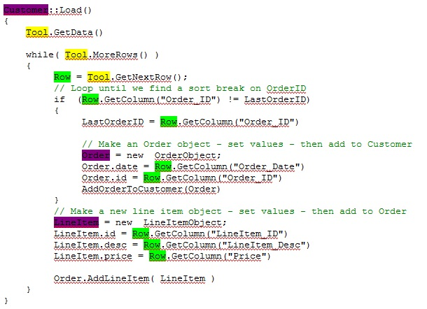
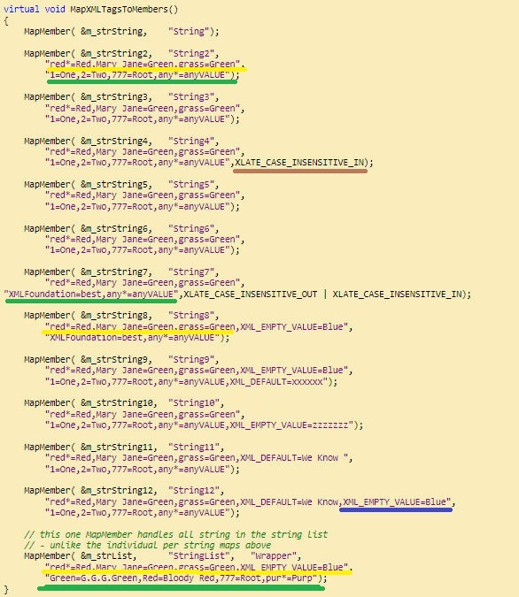
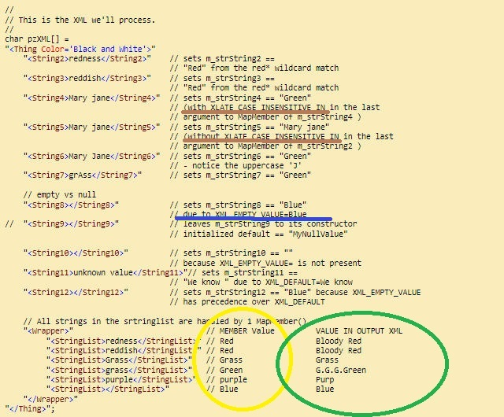

Welcome to XMLFoundation - May 2014
Software projects can fail for many reasons. In mission critical software projects there is a common objective to avoid design-resource dependencies. If one critical resource is run over by a bus, the whole project can become "bus terminated". In a lesser "mission critical" context, when another company hires away your undervalued programmer - then management finds out that the new guy can't just pick up where the undervalued guy left off. Some smaller thinking programmers even convolute code, or leave out a few necessary comments just for job security. I am normally here to support anybody using XMLFoundation in some way that uncovers an error or missing feature - however many external events could "bus terminate" this "live" support. XMLFoundation is designed and organized to prevent failure and stand the test of time. There are no outstanding bugs. There are no feature requests awaiting implementation. There are no disputes to the claim that this is the worlds fastest XML Parser. XMLFoundation is being used more than ever before and at the same time the need for me to answer questions has decreased due to the heavily commentated and exemplified code. At this point, termination of myself will not be the termination of a project based on XMLFoundation. The next economic gut bubble that vents it self wont blow XMLFoundation away.
I remember when XML 1.0 was disruptive. The sudden appearance of a global standard immediately forced projects worldwide to change course, not all could. Projects that could not react to the disruptive technology (or the opportunity) are now built on less standard protocols that now excludes them from some new use case scenarios or forces them to add layers of inefficiency and failure points in retrospect design. It's no wonder why software projects are so well known for failure. Many things can go wrong, and times change fast. If you search the internet for the term "Disruptive Technology" along with "Capitol" or "Venture", you will see that "Disruptive Technology" is sought after and valued even though it disrupts culture and/or other businesses. XMLFoundation is Disruptive Technology. It's like what vehicle radar detectors once were to police radar guns. Is that Disruptive Technology or Defensive Driving? Technology defends us from technology at every level. The performance numbers XMLFoundation produces does disrupt some technology business plans. In most technology plans, XMLFoundation merely adds new options.
When referencing this "Article" at [xml-dev] I called it bloggish. I remember reading Stroustrups First edition of "The C++ Programming Language", which had interesting quotes in it, here are a few re-quotes from the Fourth edition:
Don't interrupt me while I'm
interrupting.
-Winston S. Churchill
Premature optimization is the root of all evil.
-Donald Knuth
On the other hand, we cannot ignore efficiency.
-Jon Bentley
The purpose of computing is insight, not numbers.
-R. W. Hamming
... but for the student, numbers are often the best road to insight.
-A. Ralston
In his book, Stroustrup injects some "bloggish" quotes like this:
"... there is nothing more difficult to carry out, nor more doubtful of success, nor more dangerous to handle, than to initiate a new order of things. For the reformer makes enemies of all those who profit by the old order, and only lukewarm defenders in all those who would profit by the new order..."
-Niccol `o Machiavelli
Other Machiavelli Quotes that didn't fit in "The C++ Programming Language"
The more numerous the laws, the
more corrupt the state
-Tacitus
The corrupt state has
enough laws that anyone can be arrested and charged with an arbitrary violation,
ensuring that a State reformer will be a victim of the Court of Law, the Sword
of the State.
-Brian Aberle
The court can take the reformers
children and give them to another man and your codefendant.
-Dorn Thorn in the Corn Justice Porn with a Cop in his Pocket
If the reformer continues to
evade prison and death long enough that neither prison nor death can stop the
vision of reform, then there will be a new order of things.
-Brian Aberle
Here in the chronicles of technology insight, you might read something rogue or startling as you wander just a few links deep. There is an entire directory in the source distribution called "-Disturbing" that disturbs me more than you. Just imagine, a disturbed person creating disruptive technology. It's like having PTSD and ADD. Meet the author of XMLFoundation. When I saw that Addison-Wesley allowed Mr. Stroustrup to publish "Programming is like sex..." in "The C++ Programming Language", then I knew that it's OK to have a little bit of fun with this stuff as we teach. So check out the new section in this documentation - The Sexy GString.
There are some heavier areas of exemplification and documentation that still need to be done, specifically in the areas of Distributed Object Designs, and XML-DBMS integration and the Java integration, these areas and topics are as foundational in XMLFoundation as the GProfile, which just now got it's first real bit of documentation. If anyone would like to rent my hourly help, we will help each other contact me: XMLBoss at live dot com.
Programming is like sex: It may give some concrete results, but that is not why
we do it.
-Richard Feynman
| Calling All Chiefs for a Pow Wow | About the author(s) of XMLFoundation |
XMLFoundation is a cross platform application foundation. GString and xmlLex are 1 and yet they can be separated. The G classes are "designed" for each other - not simply "used" together. The GString now supports Compress and Cipher as member methods. Since both GZip and TwoFish are very portable and since the GString is designed for binary data equally as much as for character string data - the combination is a natural fit that deserves to be in the base class of GString. This comes after synchronizing GZip.cpp in the XMLFoundation with the latest source code from http://zlib.net/, an update that includes a fix for a rare compression bug. Zlib implements compression for most applications built after 1996. The authors recommend that all users of Zlib should upgrade and obtain the fix.
The XMLFoundation library contains many things. From utilities to frameworks, (plural to plural). The XMLFoundation implements a use of XML that it is about 3 times faster that the best that can be done with SAX, when parsing XML for the purpose of an update to some dataset that you already have. It is a very common task in the application layer or in a DBMS that uses XML as a native input protocol. In that case, if a key word OID is present as the first attribute we can be triple fast AND use 50% less memory. This is accomplished by eliminating a temporary memory copy made by typical XML parsers as well as eliminating many arguments being pushed and popped from the stack by using xmlLex::getToken(*tok) explained in more detail where performance is discussed.
The fact that the first 3 letters are ALL CAPS of in XMLFoundation understates the C++ FOUNDATIONAL application development tools ( which contain an XML Parser (like the C++ framework QT) ). Building on GString is like building on a "better" ostream. Opinion has no place amid "better" performance data. Every application that was ever built on ostream could benefit from the XMLFoundation. All the utilities are carefully designed to be a portable platform everywhere that a C++ compiler exists (like the popular C++ library Boost (which XMLFoundation compliments nicely) ). XMLFoundation's GThread is still the only pthread port for Windows Phone that I know of. Windows Phone is now the third-largest OS across Europe with 10 percent of the smart phone market -- more than double its share compared with last year. I support it. Behind the Capitol XML is a solid application Foundation.
In the past 30 days, there have been several minor "fixes" in the XMLFoundation as well - so all of this deserved being put together into build 211 that is already serving several production applications. Additionally, new documentation now includes example use of the virtual ToXML() method of XMLObject in the new example program titled BigData. Since XMLFoundation is the fastest XML Parser on earth, it stands as the most viable solution for integration of massive XML data sets - most will be to/from an SQL database - but where BigData meets XML - the XMLFoundation is a solution present. Despite the focus on XMLFoundation support for the equally important mobile platforms (iOS/Android/Windows Phone), XMLFoundation originated from the high performance needs of large data warehousing and is positioned to be the de facto standard for BigData XML just as zlib became the de facto compression. Zlib is officially de facto according to wikipedia - which is often known to be incorrect in certain topics, but I believe it is correct in this case.
This is what was happening on March 31, 2014
Of recent, I have sought out 'leaders' in the domain of XML to present a proposal for a futuristic XML that has 2 new small keywords that prefix an attribute list in a 100% syntactically backwards approach as to not not disrupt any XML 1.0/1.1 software. To assemble the chiefs for a pow wow on the subject requires the attendance from the leaders of many technical worlds. IETF is a moderated forum (like codeproject.com is moderated) and OASIS is unmoderated, once famous for hosting [xml-dev] where interfaces like SAX and DOM were created by unmoderated open debate and consensus.
I have been building and perfecting the examples in preparation for presenting this concept to the industry leaders. The concept is a 'new' idea - or as someone pointed out it's a variation of a perma-thread from the old days. In this article I had mentioned something about "Object Databases" almost changing the world once but there was a performance problem - so the world is square.
The discussion got hot at [xml-dev] until OASIS experienced malfunctions that had the list servers down for a total of 4 and a half days. OASIS Tech support had no response to some people and a broken hyperlink for problem ticket 2546 for other people. The discussion lasted for 2 days and brought out excellent debate and advancement in the documentation of the concept. Many "Authorities" on XML commented prior to the server failure that stopped the discussion for almost 5 days. I am trying to communicate this architectural design concept to all who can understand. For those seeking to understand the design concepts, I believe it is best to read the questions asked by "Experts" on the subject of XML and read the 2 day discussion. While discussing 'new' concepts like this, various views and terminology used in other people questions is helpful to read. The discussion at [xml-dev] mostly accomplished documenting the outline for an official 'Internet Draft" based on a summary of this discussion that fortunately was archived outside of OASIS servers.
The
[xml-dev] discussion archive:
http://www.altova.com/list/xml-dev/201403/
see : "RFC for XML Object Parsing"
Please use the forum
following this article to document any additional point to cover in a
formal "Internet Draft" document for standards approval - In progress.
Recently I added a "major" new example program. It's mostly been there all the time but it never had a makefile - see CustomHTTPService. It builds a static web server and implements a simple post handler AND a multi-part-form handler. It's great server platform based on ServerCore.cpp
Recently I also added a new example program called ContainOrInherit, explaining the difference between containment design and inheritance design, and the GProfile now supports XML format since that could be useful. See the (large) comment explaining the reasoning for adding XML support to GProfile 14 years after designing it amid all this XML support.
Earlier in March 2014, The bulk of the work was in the files Console.cpp and 5LoavesSvc.cpp - both are excellent frameworks for any service. Those files are not tied tightly to ServerCore.cpp, they use ServerCore.cpp. Those files are a very useful starting point 'design patterns' for many applications. They are intended to be generic for anyone needing to build a windows service. Those two files are not about XML, they are about Foundation.
This is what was new on Jan 11, 2014
This is a point in the XMLFoundation project that I will switch my focus to the porting and development of several applications that were designed and built using older versions of the XMLFoundation library. Recently my focus had been enhancing the XMLFoundation. I have more than one application that still has yet to be ported to 64 bit. In the future, updates to this main article will indicate a major update versus the daily or frequent updates of the most recent source at the external link. The current XMLFoundation and the examples are very much a result of user feedback. Even the changelog.txt was started in response the suggestion that someone gave me. Good idea. The new ChangeLogTail.txt was my idea. If you come up with a new example program, idea (great or small), or feedback that might help others - don't keep it to yourself - share it with. Share it with myself and the public on the forum at the bottom of this page, or share/discuss it with me directly ( Roaring Checkmate At Live dot com). I ask for this feedback despite the fact that recently there has been more "downvoting" than ever before. The old "5 Star" XMLFoundation has new "1 Star" haters.
The very old section in this document titled “Faster than Fastâ€, written in 2009, was put together to give some explanation and emphasis to the fact that XMLFoundation is fast. The XMLFoundation is FASTER in 2014. (as much as 3 TIMES FASTER at some operations than any 2013 release). Thank God for numbers, because words can say anything, but numbers divides fact from words. This 2014 speed-leap comes from customized memory management. This is as simple as reducing calls to the generalized global memory manager in the operating system via calls to new() and delete(). The concept is simple, and there are various approaches. The goal is to obtain heap memory for a set of operations that you might define as 1 transaction or complete task.
I have the advantage of having done custom memory management before so I applied an experienced approach toward accomplishing this. In this release, I abundantly commented the source code changes and additions to document exactly how this custom memory management is accomplished. The proof is in the numbers exactly how important of an issue memory management is – regardless of your target being on an Android phone or a 64 bit Windows server – the same concept applies to memory management.
Additionally – as we kick off 2014 with a massive reduction in the reliance of the operating systems memory manager – we raised the roof for 32 bit processing limits that are reached when new() returns NULL. So, if faster is not what you need – perhaps you will enjoy the higher processing limits that you can now achieve in the same memory limitations that you have always had. FASTER execution and HIGHER limits are both achieved by the same upgrade in this release. I expect that this raised the roof for 64 bit limits as well – but I have never seen that roof.
The bulk of the memory management documentation is in the code, I will conclude the introduction to the 2014 version with the basic steps that make it all happen.
In XMLObject.h, the new method :
virtual int GetMemberMapCount()
returns the number of MemberMaps() that all objects of any specific type will have mapped to them. Knowing this, XMLObject will preallocate a chunk of memory large enough to hold the details of ALL MemberDescriptor()'s that contain that information at runtime for the object instance - in the primitave days of 2013 each MemberDescriptor was allocated a global heapspace of it's own using new()
The code in XMLObject.cpp now looks like this - to manage the memory blocks
int nArraySize = GetMemberMapCount(0);
m_pMemberDescriptorArray = malloc(sizeof(MemberDescriptor) * nArraySize);
GList made did a similiar change. Here is a bit from GListNodeCache that
aplies the same concept a bit differently. void *pBlock = malloc(sizeof(GList::Node) * NODES_PER_ALLOC);
// Now we access individual nodes like this: The temp variable pVoid is for readability....
void *pVoid = ((char *)pBlock) + ( sizeof(GList::Node)*nBlockIndex);
GList::Node *pNodeInBlock = (GList::Node *)pVoid; // this is the same code as above with no temp variable. It is a type cast with pointer arithmetic
pNodeInBlock = (GList::Node *)((void *)(((char *)pBlock)+(sizeof(GList::Node)*nBlockIndex))); This is what was new December 21st 2013
MurmurHash was the latest big advancement in Hashing. It was published in Austin Appleby’s personal blog. Google hired him and has taken over Murmurhash, and published a variant of it called CityHash. Strangely, many Google publications failed to recognize SpookyHash - published October 31, Ground Hog Day, and other celebrated days, citing only MurmurHash.
Here are two links to help you quickly catch up on hashing algorithms to get your prerequisites up to date. To cut through all the trending Hash Hype, I recommend this brief overview of hashing.:
http://www.homolog.us/blogs/blog/2013/05/06/why-computer-science-professors-dislike-hash-functions/
I wanted to see if CityHash could help me speed up my indexing scheme so I decided to test SpookyHash/CityHash within GHash which is part of XMLFoundation. The test counts CPU cycles and/or microseconds on both Windows and Linux while indexing large datasets for both 32 and 64 bit applications. The source code for this test is included in the example program ExIndexObjects.
The results are very interesting. GHash is so fast that CityHash slows it down. The GHash is a unique algorithm designed to index XMLObjects – but it can index anything. In summary, GHash is an Array of B-Trees. It handles hash collisions so efficiently that it eliminates need for "low collision" hashing algorithms such as CityHash which use far more CPU than a simple Rotating Hash, and further research will determine just how low it can go in the simplification of that step.
CRC-n. is faster than CityHash. For Checksumming, or creating a hash function with a perfect distribution (aka avalanche effect) CRC is a better choice. CityHash and SpookyHash are curious works in math that have only 1 possible application – they can destroy data quickly(like the Google Code). If you have a HUGE amount of sensitive data and want to delete it (which will mark the disk sectors ‘free’ for the OS to use) and DESTROY it so that it could never be recovered by any disk utility tools. There are many free utilities that accomplish this already, but with these new algorithms the software can accomplish more block corruption in less time. Why does Google Inc invest in and market algorithms with no purpose in any of their active projects? If I was a share-holder I would vote for new management.
GHash ought not be confused with a block cruncher. The name
GHashTableTreeStack
was too long so it’s called GHash. The long name would be more
proper, like Mr. Hash. GHash is one single "Data Structure Algorithm" that
combines multiple algorithms and data structures (see highlighted) as parts of
the whole. GHash uses a Rotating Hash to index a Static Array of Binary Trees. A
GBTree is a variant of an automatically balancing AVL Tree that contains an
alternate index so that beyond traverse Ascending and Descending (like any
B-Tree via Left/Right) it also has a secondary index via Next/Previous which
allows the GBTree to also be traversed in the order that items were
inserted. The secondary index can optimize certain bulk commits (aka disk
writes) of individual updates that were applied while it was stored in RAM by
GBTree. The GHash cannot do that, but it uses a
GBTree that can. The XML data updates and application layer updates
primarily use only the primary index. Upon a special kind of commit the
fragmented memory structure can be flattened back to it’s initial state into
the same order that they came from the disk. Another important algorithmic
component of GHash is the unique (aka one of a kind) GHashIterator
which allows SIMPLE and non-blocking THREAD-SAFE iteration of this complex data
structure via an internal integer index into the Static Array used in
combination with a GBTreeIterator which is maintains two GStacks
that act as LIFO queues of state information used to quickly iterate the Tree
portion of this structure, such a task is typically accomplished by a recursive
method of the Tree structure. A mere typical approach will force a multithreaded
application to block reads of the structure. GHash is non typical and
very fast.
Each algorithm has various properties. Building from a Window64 starting point, I re-structured the “Google Sparse Hash†project source code. I made major structure changes to the code. This may be the answer to a commented question in the source code about an empty bucket. I added struct support for Windows, fully redesigned the build, and provide a 64 bit target for Windows which the “Sparse Hash Project†does not. The work is in the file GSparseHash.h. It will be the file of interest in this release , and admittedly it is still a work in progress. It is a starting point. That one file stands as an exception in the XMLFoundation because it does not yet build under every compiler. It's MUCH simpler to incorporate into any build as the inlined implementation in GSparshHash.h (where the compiler supports) - and I expect only minor changes for GCC to support GSparseHash.h
Although GHash is not a Distributed Data Structure, it is a far more valuable algorithmic component within a “Distributed Data Structure†than CityHash. Just as GHash is made of many algorithmic components so must a structure like BigTable designed and used by Google, which is likely where CityHash is used. BigTable is best defined as a sparse, distributed multi-dimensional sorted map. It is accurately summarized here: http://www.cs.rutgers.edu/~pxk/417/notes/content/bigtable.html.
Boom. Bust. Readjust. Ashes to Ashes. Dust to Dust. In God we Trust. Watch the Bubble sort Bust.
64 bit build results from ExIndexObjects to test XMLObject indexing speeds
----------------------------------------------------
This sample works with HUGE test files.
It is VERY VERY slow under a debugger.
If you dont have enough RAM, or want to speed it up.......
Delete TheWholeTruth.txt as many folks must do in their reality.....
It will use Truth.txt which will obtain evidence you can see.
Note: 777 milliseconds = 777,000 microseconds
Note: The 32 bit build counts cpu clock cycles
[Creating Object Instances]=539 milliseconds
[Create 81 MB XML Document]=1499 milliseconds
[Create 81 MB XML Document Faster]=633 milliseconds
[Save To Disk]=933 milliseconds
[Releasing memory]=1026 milliseconds
-------- GList --------
[InsertObjects]=5472 milliseconds
[Iterate All ]=821160 objects in 5,245 microseconds
[Search Find ]=23,455 microseconds
[Update Object]=3,182 microseconds
[Update Faster]=2,982 microseconds
[Iterate All ]=821160 objs in 4,259 microseconds
[Search NoFind]=33,071 microseconds
[Create XML ]=661 milliseconds
[XML To Disk ]=708 milliseconds
[Free Memory ]=2920 milliseconds
---------------------- Compressed 83,109,379 bytes of XML to 5,131,905
-------- GQSortArray --------
[InsertObjects]=5738 milliseconds
[Iterate All ]=821160 objects in 3,797 microseconds
[Search Find ]=1,429 microseconds
[Update Object]=1,113 microseconds
[Update Faster]=1,091 microseconds
[Iterate All ]=821160 objs in 3,827 microseconds
[Search NoFind]=2,108 microseconds
[Create XML ]=743 milliseconds
[XML To Disk ]=1311 milliseconds
[Free Memory ]=2849 milliseconds
---------------------- Compressed 83,109,379 bytes of XML to 5,131,905
-------- GBTree --------
[InsertObjects]=6814 milliseconds
[Iterate All ]=821160 objects in 19,073 microseconds
[Search Find ]=6 microseconds
[Update Object]=45 microseconds
[Update Faster]=29 microseconds
[Iterate All ]=821160 objs in 18,026 microseconds
[Search NoFind]=6 microseconds
[Create XML ]=644 milliseconds
[XML To Disk ]=676 milliseconds
[Free Memory ]=3844 milliseconds
---------------------- Compressed 83,109,379 bytes of XML to 5,131,905
-------- GHash --------
[InsertObjects]=6061 milliseconds
[Iterate All ]=821160 objects in 101,138 microseconds
[Search Find ]=1 microseconds
[Update Object]=38 microseconds
[Update Faster]=29 microseconds
[Iterate All ]=821160 objs in 111,718 microseconds
[Search NoFind]=1 microseconds
[Create XML ]=1641 milliseconds
[XML To Disk ]=745 milliseconds
[Free Memory ]=4102 milliseconds
---------------------- Compressed 83,109,379 bytes of XML to 6,902,527
-------- GSparseHash --------
[InsertObjects]=6654 milliseconds
[Iterate All ]=821160 objects in 8,931 microseconds
[Search Find ]=1 microseconds
[Update Object]=39 microseconds
[Update Faster]=22 microseconds
[Iterate All ]=821160 objs in 8,705 microseconds
[Search NoFind]=1 microseconds
[Create XML ]=1659 milliseconds
[XML To Disk ]=1332 milliseconds
[Free Memory ]=4352 milliseconds
---------------------- Compressed 83,109,379 bytes of XML to 6,990,074
C:\XMLFoundation\Examples\C++\ExIndexObjects\Release>
The ongoing commentating and documenting of the source code is always improving the usability of this powerful set of tools. The tools are getting even more powerful. Many comments were added into the source code in response to questions that people have asked. As I answer questions, I put those answers in strategic places in the source code in the form of a comment that will prevent others from having the same issue in question.
You can always search through the XMLFoundation library source code on almost any method in any G class and within the XMLFoundation you will find a usage example to compliment the documentation in comments above each method.
If a picture is worth a thousand words, an example is worth ten thousand. "Open Source" projects are frequently unsupported and undocumented, however you will find that the ongoing commentating of source code is continuously being maintained and developed to make the toolkit more useful and productive in the hands of people who are new to using it. The detailed documentation is all in the source code, right where you need it. For example a comment was just recently added into ListAbstraction.h just above the StringCollectionAbstraction class that explains how that base class is used to store ANY data type into ANY data structure. That comment links to a new class called CDoubleArrayAbstraction in AbstractionsMFC.h that stores the data type "double" into MFC's array implementation called CArray. While the implementation was the point of interest of one person, the comments added will be the point of interest to even more people that need some other data type in some other kind of data structure.
The GString is ancient. Before the GString, xmlLex used ostream. The ONLY reason GString was initially created was to out-perform ostream. This is why GString has two identical methods Write() and write(). ostream uses a lowercase write(). In our application(s) that used ostream we simply commented out the ostream instance and replace it with a GString of the same variable name. If GString did not have a lowercase write(), you would have to hunt through your code and replace all the places you called write() and change it to Write() making it difficult to change something at such a low level, it is underneath the XML Parser. If you understand what ostream is, then you understand what GString is. If they were both clothing they would be found in the same department next to MFC's CString. The GString is way sexier. It exposes parts that ostream and CString keep private.
The big 'hack' in GString that makes it so fast, is that it makes no heap allocation unless your data grows beyond 64 bytes. It may sound like a small thing, but it's the hack that fills the crack. In this document I already wrote about how important memory management is. GString applies the same concept of heap avoidance to use the faster stack space if possible, or by including some 'data' space in the 'object' space. This means when you instantiate a GString it eats up an 'extra' 64 bytes just incase you might use it. If you use more than the 64 bytes, you will be punished by waiting for the slower heap allocation. If you put no data in the GString, then you needlessly preallocated memory that you never used and your punishment was that you are holding a lock on unused memory that perhaps is needed elsewhere. It's all about memory vs. speed tradeoffs.
Very recently XMLFoundation added GString0, and GString32. The number represents the bytes of 'extra' space used to avoid the heap allocation. If you expect that a GString value will be empty 99% of the time and you expect many instances of that normally empty GString will exist at the same time, you may choose to use GString0, which makes no initial stack allocation, your application will then use less memory and run a little slower only when the 1% of the exceptions come around. The GString is a GString64, but we just call it GString.
Another major performance area of the GString is in the resize() method, the reallocation algorithm is very simple. The size of the buffer is doubled whenever it would otherwise grow beyond it's current allocation bounds. Alternatively the allocation space can grow by a block size, that approach is generally an order of magnitude slower in a preallocated GString. GString supports both allocation styles, but it defaults to doubling the current buffer size. The worst case scenario for the size doubling is: If you have 4 GB in a GString and only need to fit one more byte you might have to allocate 8GB for a GString that will never grow beyond 4GB + 1 byte. You can always preallocate 4GB + 1 byte if you know that will be the final size, then you can avoid all this performance oriented guesswork with the fastest implementation possible. Many times the final size is unknown until it is final.
If the GString was ALL about performance it would be of little interest beyond an internal tool needed by a performance orientated XML Parser, however the GString is plenty robust, filled with common needs in a wide array of applications, the interfaces are fully document in GString.h, here is a summary: I left out all the typical String methods like Mid() Left() Right(), Upper() Compare*() and many others, see GString .h for complete documentation.
// write() appends to the GString to mimic ostream
//
// s = "Just when you think you've seen it all"; s.write("\0there is more.",15);
// now the Length() is the length of the entire string contents, therefore
// s.Length() > strlen(s);
void write(const char *pSource,__int64 nBytes); // lower case for ostream interoperability just replace "ostream" with GString types and recompile for 2X string manipulation speed.
void Write(const char *pSource,__int64 nBytes){write(pSource,nBytes);}; // upper case for Development tools method sorting
void write(unsigned char *pSource,__int64 nBytes){write((const char *)pSource,nBytes);};
void Write(unsigned char *pSource,__int64 nBytes){write((const char *)pSource,nBytes);}; // upper case for Development tools method sorting
// Load this GString from a file and replace any contents in this GString - returns 1 for success, 0 for fail
bool FromFile(const char* pzFileName, bool bThrowOnFail = 1);
// Append the contents of the specified file to the end of this GString - returns 1 for success, 0 for fail
bool FromFileAppend(const char* pzFileName, bool bThrowOnFail = 1);
// Save this GString to a file - overwrite if file exists
bool ToFile(const char* pzFileName, bool bThrowOnFail = 1);
// Append this GString to a file - create file if not existing returns 1 for success, 0 for failure
bool ToFileAppend(const char* pzFileName, bool bThrowOnFail = 1);
// The mask can contain any printable character and is terminated
// by a null.
//
// The character '_' in the mask will be replaced by a single character
// in the source string. The character '*' will be replaced by the
// remaining characters in the source string. Both '_' and '*' can be
// escaped using the character '\'. You can escape the escape character
// with an escape character, i.e. "\\".
//
// Some example masks:
//
// Phone number mask: (___)___-____ [ext:*]
// SSN mask: ___-__-____ (tip: don't use SSN as a key in your database!)
//
// If the source data is larger than the mask and the mask doesn't contain
// the wild character '*' the source data will be truncated.
void MergeMask(const char *szSrc, const char *szMask);
// Appends an ASCII/HEX dump to this string. Looks like this:
// 2F 31 2E 30 0D 0A 41 63 63 65 70 74 3A 20 2A 2F 2A 0D 0A 41 63 63 65 70 74 /1.0..Accept: */*..Accept
// 2D 4C 61 6E 67 75 61 67 65 3A 20 65 6E 2D 75 73 0D 0A 55 73 65 72 2D 41 67 -Language: en-us..User-Ag
//
// You may set bIncludeAscii=0, to remove the line breaks and readable column of text from the result.
// note: this appends to the string so you may first prefix the dump with context information:
// Common usage: s="recv'd:"; s.FormatBinary(buf,N); s.ToFileAppend("debug.txt")
void FormatBinary(unsigned char *pData, __int64 nBytes, int bIncludeAscii=1);
void FormatBinary(const GString &strBinary, int bIncludeAscii =1);
// CommaNumeric() - 123456789 will become 123,456,789
// CommaNumeric() - 1000 will become 1,000
// returns pointer to buffer inside 'this'
const char *CommaNumeric();
// convert 'this' to a user friendly byte notation with 2 digit unrounded precision
// returns pointer to buffer inside 'this'
//-----------------------------------------------------------------------------------
// 999 = 999 1000000 = 1.0Mb 1000000000000 =1.0Tb
// 1000 = 1.0Kb 10000000 = 10Mb 9500000000000 =9.5Tb
// 10000 = 10Kb 999999999 = 999Mb 999999999999999 =999Tb
// 999999 = 999Kb 1000000000 = 1.0Gb
const char *AbbreviateNumeric();
// removes leading and trailing quotation's from string
void StripQuotes();
// escapes <>&"\ in 'this' with &#ascii-number;
void EscapeXMLReserved();
// Removes the character ch from the left side of the string.
void TrimLeft(char ch = ' ', short nCnt = -1);
// trim leading white space (tabs, CR, LF, spaces) from the left(beginning) of the string
void TrimLeftWS();
// removes nCnt bytes from the beginning of the string
void TrimLeftBytes(__int64 nCnt);
// Pads the string object on the right with ch to make the string
// a minimum of n character's in length s="123" s.PadRight(5) s = "12300"
void PadRight(__int64 nCnt, char ch = ' ');
// Pads the string on the right with nCnt of ch
void Append(__int64 nCnt, char ch = ' ');
// Removes the character ch from the right side of the string. (max nCnt)
void TrimRight(char ch = ' ', short nCnt = -1);
// Shortens the sting by nCnt bytes
void TrimRightBytes(__int64 nCnt);
// trim White Space from the end of the string
// removes trailing tabs, spaces, carriage returns, new lines
void TrimRightWS();
// search the string starting at 0 based index nStart
// return -1 if not found otherwise a 0 based index of the found data
__int64 FindCaseInsensitive( const char *lpszSub, __int64 nStart = 0 ) const;
__int64 Find( const char *pstr, __int64 nStart = 0 ) const;
__int64 Find( char ch, __int64 nStart = 0 ) const;
// return -1 when Nth occurrence is not found, otherwise index to the Nth occurrence of pstr
// Nth is a 1 based index, so Nth=1 is the first occurrence, Nth=2 is the second, and so on.
// Note: if you needed to split folder paths from Folder/Paths/To/File.txt
// Consider using a GStringList like this: GStringList l("/","Folder/Paths/To/File.txt")
// FindNth() is better suited for something that is always (before/at/after) the Nth occurrence
__int64 FindNth( const char *pstr, int Nth, __int64 nStart = 0 ) const;
__int64 FindNth( char ch, int Nth, __int64 nStart = 0 ) const;
// return -1 if none of the [pzCharsToSearchFor] were found in 'this'
// otherwise returns the index of the first char in 'this' that is in the [pzCharsToSearchFor]
__int64 FindOneOf(const char *pzCharsToSearchFor) const;
// return a pointer into 'this' after the matched find
// s="one=hello" s2=FindStringAfter("one=") s2 == "hello"
// same as Find() but returns data rather than an index, and advances it past the match token - a common task
const char *FindStringAfter(const char *pSearchFor) const;
// a dynamic SubStr()
// s="aaaBBBccc" s2 = s.FindStringBetween("aaa","ccc") s2 == "bbb"
GString FindStringBetween(const char *pSearchForBegin, const char *pSearchForEnd) const;
// All of the other Find* methods assume that this's string content is a null terminated string
// This find searches this's contents for a binary match to the data in [strToFind] that may also be binary
// nulls in either this or [strToFind] will not terminate the search. Like the other finds, this returns
// the index that [strToFind] begins in [this] or -1 if it was not found, like the other find*'s [nStart]
// is the 0 based index in [this] that the search begins at.
__int64 FindBinary(GString &strToFind, __int64 nStart = 0);
// search starting from the end of the string,
// nStart is a 0 based index of the starting place to search, by default nStart is _len (the last byte of the string)
// the search just works toward the front - index 0.
// if bMatchCase = 1, the ONLY EXacT Case matches will be found
// returns -1, if [ToFind] is not found otherwise a 0 based index where it was found
//
// example to obtain the extension from a file name if it has one
// int nDot = strFile.ReverseFind(".");
// GString strExtension( (nDot == -1) ? "" : strFile.StartingAt( nDot + 1 ) );
__int64 ReverseFind( char chToFind ) const;
__int64 ReverseFind( char chToFind, __int64 nStart ) const;
__int64 ReverseFind( const char *pzToFind, __int64 nStart = -1, int bMatchCase = 0 ) const;
// s = "c:\The\Path\Folder1\Folder2\File.exe"
// example: s.SetLength(s.ReverseFindNth("\\",2));
// s = "c:\The\Path\Folder1"
__int64 ReverseFindNth( const char *pzToFind, int Nth) const;
// starting from the end of the string, return the index of the first char in this that matches any char in pzToFind
// s = "/usr/bin/file.ext" || s = "c:\the\path\file.ext"
// s.SetLength(s.ReverseFindOneOf("/\\")); // cut off the file name for either a windows or unix path
__int64 ReverseFindOneOf( const char *pzToFind ) const;
__int64 ReverseFindOneOf( const char *pzToFind, __int64 nStart ) const;
// insert the the given value into 'this' at the given index.
// s = "Rold" s.Insert(2,"ck the Wor") s == "Rock the World"
// if you know the length of [str] or if it contains nulls as data pass the length of it as [nStrLen] otherwise [str] will be inserted up to the first NULL
void Insert( __int64 nIndex, char ch );
void Insert( __int64 nIndex, const char *str, __int64 nStrLen = -1 );
// search 'this' string for [pzMatch], and insert [pzInsertThis] before [pzMatch] for InsertBefore() or after [pzMatch] for InsertAfter()
// if bMatchCase is set to 1, then ONLY ExAcT case matches for [pzMatch] will be used.
// returns the index that [pzInsertThis] was inserted or -1 if [pzMatch] was not found.
__int64 InsertBefore( const char *pzMatch, const char *pzInsertThis, int bMatchCase = 0);
__int64 InsertAfter( const char *pzMatch, const char *pzInsertThis, int bMatchCase = 0);
// remove [nLen] bytes starting at index [nStart]
void Remove ( __int64 nStart, __int64 nLen );
// remove all occurrences of [ch], return count removed
__int64 RemoveAll ( char ch );
// remove all occurrences of [pStrToRemove], if [bMatchCase] is 1, then only EXaCT case matched are removed. returns count removed.
__int64 RemoveAll ( const char *pStrToRemove, int bMatchCase = 0 );
// remove first occurrence of [ch], return 1 if removed otherwise 0
int RemoveFirst ( char ch );
// remove first occurrence of [pStrToRemove], if [bMatchCase] is 1, then only EXaCT case matched are removed. return 1 if removed otherwise 0
int RemoveFirst ( const char *pStrToRemove, int bMatchCase = 0 );
// remove last occurrence of [pStrToRemove], if [bMatchCase] is 1, then only EXaCT case matched are removed, return 1 if removed otherwise 0
int RemoveLast ( const char *pStrToRemove, int bMatchCase = 0 );
// remove last occurrence of [ch], return 1 if removed otherwise 0
int RemoveLast ( char ch );
// Replace ALL occurrences of *What with *ReplaceWith, unless nFirstOccuranceOnly = 1, then only replace the first occurance
void Replace( char chWhat, char chReplaceWith, int nFirstOccuranceOnly = 0 );
void Replace( const char * szWhat, char chReplaceWith, int nFirstOccuranceOnly = 0 );
void Replace( const char * szWhat, const char *szReplaceWith, int nFirstOccuranceOnly = 0 );
void ReplaceCaseInsensitive( const char * szWhat, const char *szReplaceWith, __int64 nStart = 0, int nFirstOccuranceOnly = 0 );
void Replace( char chWhat, const char *szReplaceWith, int nFirstOccuranceOnly = 0 );
// replace all occurrences of each character in [pzCharSet] with [chReplaceWith]
// s = "717273"
// s.ReplaceChars("123",'_')
// s == "7_7_7_"
void ReplaceChars(const char *pzCharSet, char chReplaceWith);
The new GThread, first of all, is a Windows thing. Inspired by that "designed for each other" concept. Windows Mobile, Windows 32, Windows 64, and Windows Phone all need a pthread interface (POSIX Threads) for ServerCore, and for the thread synchronization within XMLFoundation caching. iOS, Linux, Android, AIX, Solaris, and HPUX all have an official pthread implementation. Microsoft decided not to be bound to the POSIX standard. I guess you cant be a leader if you always follow. Windows Run Time (aka managed .NET code or WinRT) has a completely different threading model besides the Win32 threading model . I needed a pthread interface for WinRT and I was forced to build my own - but the vast majority of the work was already complete thanks to a combination of Win32 PThreads, the implementation from John E. Bossom and the publication of "namespace ThreadEmulation" Copyright (c) Microsoft Corporation. GThread.cpp works on all Windows platforms. It is NOT intended to implement the whole of POSIX threads - only the small subset necessary within the XMLFoundation code. This is a clearly defined abstract interface (defined with #defines) in GThread.h. This better positions XMLFoundation to further customize GThread.cpp which unlike the previously used PThread.cpp (which was "designed" to implement POSIX), GThread is "designed" for the needs of XMLFoundation. As was the case between the ObjectFactory and the XML Parser - being designed for each other makes all the difference in the world. If you can do it better than the standard, I guess its time to quit following that standard. I suspect GThread will someday further optimize the integration to BOTH Windows threading models to make the most of a fully native solution. For example, consider this code snipped from xmlDefines.h that uses a native threading optimization for Windows.
// On Windows, a Critical Section is faster than a Mutex but
// Critical Sections dont exist in Unix or PThreads so this
// mapping macro was inspired to achieve the best performance
#ifdef _WIN32
#ifdef __WINPHONE
#define XML_MUTEX gthread_mutex_t
#define XML_INIT_MUTEX(m) gthread_mutex_init(m,0);
#define XML_DESTROY_MUTEX(m) gthread_mutex_destroy(m);
#define XML_LOCK_MUTEX(m) gthread_mutex_lock(m);
#define XML_UNLOCK_MUTEX(m) gthread_mutex_unlock(m);
#else
#define XML_MUTEX CRITICAL_SECTION
#define XML_INIT_MUTEX(m) InitializeCriticalSection(m);
#define XML_DESTROY_MUTEX(m) DeleteCriticalSection(m);
#define XML_LOCK_MUTEX(m) EnterCriticalSection(m);
#define XML_UNLOCK_MUTEX(m) LeaveCriticalSection(m);
#endif
#else
#define XML_MUTEX pthread_mutex_t
#define XML_INIT_MUTEX(m) pthread_mutex_init(m,0);
#define XML_DESTROY_MUTEX(m) pthread_mutex_destroy(m);
#define XML_LOCK_MUTEX(m) pthread_mutex_lock(m);
#define XML_UNLOCK_MUTEX(m) pthread_mutex_unlock(m);
#endif
PThread.cpp is still included incase you need it, but it is now unused by the XMLFoundation and several applications I have built upon it.
If you have ever built an application that stores and retrieves "Application Settings", You had a situation where you could have used GProfile. On Windows, it is popular to put your application configuration settings in the Windows Registry. There are reasons not to do that, however it is a practice that dates back to 16 bit Windows 3.1 development when Charles Petzold documented and exemplified the Windows API. Even back then, it was popular to add your own [Section] into the WIN.INI file. The WIN.INI file stored "Application Settings" for Windows such as wallpaper settings and other user preferences. The Windows API allowed you to write in WIN.INI - so did notepad.exe
There are some advantages to writing your configuration settings in a file that is not managed by the operating system. It becomes portable to Linux and iOS as well as Windows. It becomes very simple to move configurations from machine to machine when the "Application Settings" are in a file rather than all over in the registry. It also becomes very easy to manage multiple configurations, by maintaining multiple versions of the configuration file. It's not so simple to copy a snapshot of the Windows registry and switch between versions. You can easily do that with GProfile.
GProfile also allows you to encrypt your application configuration settings. You could encrypt individual keys in the registry, that would require a bit more code and work than if you were to use GProfile. The Windows Registry has an API called RegNotifyChangeKeyValue(), this will allow your application to be notified when an external source has changed a value. GProfile has a method called RegisterChangeNotification() that does the same thing. Additionally you can easily switch between INI format or XML format to store your "Application Settings", settings stored in the registry are not so easily exported to a .REG file - a far cry from simple INI or open XML like the GProfile supports.
The GProfile is ancient, like the GString. In fact not until may of 2014 were the last of the C++ "short" datatypes converted to "bool". When GProfile was first written not all C++ compilers supported 'bool', or they just defined it as a short, so now GProfile uses more modern and intuitive syntax. The following are a few of the method interfaces to GProfile.
// If you supply pzSection and pzEntry, your notification will be called only when
// that value is changed, if you pass NULL for pzEntry, then you will get all changes to the pzSection.
void RegisterChangeNotification(const char *pzSection, const char *pzEntry, fnChangeNotify fn);
void UnRegisterChangeNotification(const char *pzSection, const char *pzEntry);
// returns a list of "Section\tName" strings identifying all registered Change Notifications
GStringList *ListChangeNotifications(){return &lstChangeNotifications;}
// return the file name used to load the content otherwise "NONE" if it was loaded from memory
const char *LastLoadedConfigFile(){return m_strFile;}
// The section/entry will be created when it does not already exist
// The existing value will be repalced with the supplied value when it does exist
void SetConfig(const char *szSection, const char *szEntry, const char *pzValue);
void SetConfig(const char *szSection, const char *szEntry, int nValue);
void SetConfig(const char *szSection, const char *szEntry, long lValue);
void SetConfig(const char *szSection, const char *szEntry, __int64 lValue);
void SetConfigBinary(const char *szSection, const char *szEntry, unsigned char *lValue, int nValueLength);
void SetConfigCipher(const char *szSection, const char *szEntry, const char *pzPassword, const char *lValue, int nValueLength);
// Writes memory config to a given destination.
// An existing file will be overwritten, GString will be appended to.
// Returns the number of bytes written to the destination on success or 0 for failure.
long WriteCurrentConfig(const char *pzPathAndFileName, bool bWriteXML = 0);
long WriteCurrentConfig(GString *pzDestStr, bool bWriteXML = 0);
// just like WriteCurrentConfig(), but only serialize a single [section]
long WriteCurrentConfigSection(GString *pzDestStr, const char *pzSection, bool bWriteXML = 0);
// function retrieves the names of all sections
void GetSectionNames(GStringList *lpList);
// function retrieves all the keys and values for the specified section
// returns NULL if specified section doesn't exist, use this code to iterate a section:
///////////////////////////////////////////////////////////////////////////////////
// GListIterator itNVP(GetProfile().GetSection("MySection"));
// while (itNVP())
// {
// GProfileEntry *pNVP = (GProfileEntry *)itNVP++;
// // pNVP->m_strName
// // pNVP->m_strValue
// }
const GList *GetSection(const char *szSectionName);
// returns the number of entries for a given section
__int64 GetSectionEntryCount(const char *szSectionName);
// RemoveSection() and AddSection() do as their names suggest affecting an entire [Section] with all entries in it
GProfileSection *RemoveSection(const char *szSection);
void AddSection(GProfileSection *pS, int bIssueChangeNotification = 1);
// deletes an entry under the specified [Section]
// returns 1 if removed, 0 if it was not there to remove
bool RemoveEntry(const char *szSection, const char *szEntry);
// the string length of the value. 0 is empty or non existing
__int64 ValueLength(const char *szSection, const char *szEntry);
// returns 1 if the section (and entry) exists, otherwise 0
bool DoesExist(const char *szSectionName, const char *pzEntry);
bool DoesExist(const char *szSectionName);
// retrieves a boolean from the specified section
bool GetBoolean(const char *szSectionName, const char *szKey, bool bThrowNotFound = true );
bool GetBool(const char *szSectionName, const char *szKey, bool bThrowNotFound = true);
// retrieves an int/int64 from the specified section
__int64 GetInt64(const char *szSectionName, const char *szKey, bool bThrowNotFound = true);
int GetInt(const char *szSectionName, const char *szKey, bool bThrowNotFound = true);
// retrieves an charachter string value from the specified section
const char *GetString(const char *szSectionName, const char *szKey, bool bThrowNotFound = true);
// same as GetString() but ensures a trailing \ in NT and a / in UNIX
const char *GetPath(const char *szSectionName, const char *szKey, bool bThrowNotFound = true);
// load the profile configuration file yourself,
// and create this object "with no disk config file"
GProfile(const char *szConfigData, __int64 dwSize, bool bIsXML);
// load from file, no environment override allowed
GProfile(const char *pzFilePathAndName, bool bIsXML);
Building the Windows Phone Example is very simple once you have the development environment setup. The WP8 Emulator is Hyper-V, so you need to have a Core i5 or i7 CPU that has Intel VT-x/EPT to see anything work. You will also need Win 8 Pro or Enterprise. Install the Windows Phone SDK after installing VS2012 ( or select the Windows Phone Development option during the install of VS2013 ). Under the Examples folder, open the solution for Windows Phone, build and run it on the emulator. The example application does the same thing as the example for iPhone - It shows how to deal with XML, and it starts an HTTP server on the phone using ServerCore.cpp.
The port to iOS is complete. The XMLFoundation concepts work beautifully in Objective C++. I added a new example program called ObjectiveObjects that shows how to use all the C++ examples in Objective C++. The example added for iOS is more complete than the example for Android, in that it documents converting XML to Objects. Like the Android example, the iOS example also shows how to use ServerCore.cpp to create an HTTP server on the phone. All of the code of interest in the new example is found in the file ViewController.m. Here is a bit of that file:
@implementation ViewController
@synthesize button1 = _button1;
@synthesize button2 = _button2;
@synthesize button3 = _button3;
@synthesize textView = _textView;
//////////////////////////////////////////////////////////////////
// Define a simple object
//////////////////////////////////////////////////////////////////
class MyCustomObject : public XMLObject
{
public: // make public here for example simplicity - this is not required
GString m_strString; // A String Member
GString m_strColor; // An attribute , not an element
int m_nInteger; // An Integer Member
char m_szNative[10]; // a fixed 10 byte buffer
GStringList m_strList; // A String List
virtual void MapXMLTagsToMembers()
{
// Member variable XML Element
MapMember( &m_strList, "StringList", "Wrapper");
MapMember( &m_nInteger, "Number");
MapMember( &m_strString, "String");
MapMember( m_szNative, "FixedBuffer", sizeof(m_szNative) );
MapAttribute(&m_strColor, "Color");
}
// 'this' type, followed by the XML Element name, normally DECLARE_FACTORY() is in an .h file
DECLARE_FACTORY(MyCustomObject, Thing)
MyCustomObject(){} // keep one constructor with no arguments
~MyCustomObject(){};
};
// IMPLEMENT_FACTORY() must exist in a .CPP file - not an .h file - one for every DECLARE_FACTORY()
IMPLEMENT_FACTORY(MyCustomObject, Thing)
//
// This is the XML we'll process.
//
char pzXML[] =
"<Thing Color='Red'>"
"<String>Owners Word</String>"
"<Number>777</Number>"
"<FixedBuffer>native</FixedBuffer>"
"<Wrapper>"
"<StringList>one</StringList>"
"<StringList>two</StringList>"
"</Wrapper>"
"</Thing>";
int StartHere0()
{
MyCustomObject O;
O.FromXMLX(pzXML);
// look at the Object "O".
GString strDebug;
strDebug << "Yo! Check out O:" << O.m_strString <<
"[" << O.m_nInteger << "]:" << O.m_szNative << "\n\n\n";
XlogInfo(strDebug);
// set some data
O.m_strString = "Root was here";
// add any encoding tags or doctype you need - if you need them other wise skip the next two lines
GString strXMLStreamDestinationBuffer = "<?xml version=\"1.0\" standAlone='yes'?>\n";
strXMLStreamDestinationBuffer << "<!DOCTYPE totallyCustom SYSTEM \"http://www.IBM.com/example.dtd\">";
O.ToXML( &strXMLStreamDestinationBuffer);
XlogInfo(strXMLStreamDestinationBuffer);
return 0;
}
- (IBAction)test2:(id)sender {
StartHere0();
}
This design pattern for processing XML is described in more detail further down in this document. All the concepts presented here apply to iOS as well as all the other platforms it already supported.
And the code to start the HTTP server from ObjectiveC++ is even simpler:
// you will need to fix this path to point to wherever you unzipped XMLFoundation to
#include "/Users/user/Desktop/XMLFoundation/Servers/Core/ServerCore.cpp"
const char *pzBoundStartupConfig =
"[System]\r\n"
"Pool=5\r\n"
"ProxyPool=0\r\n"
"\r\n"
"[HTTP]\r\n" // [HTTP] section
"Enable=yes\r\n"
"Index=index.html\r\n"
"Home=%s\r\n" //<-----Notice the %s
"Port=%s\r\n";
int g_isRunning = 0;
void StartHTTPServer(NSString *strHome, NSString *strPort)
{
if (!g_isRunning)
{
g_isRunning = 1;
SetServerCoreInfoLog( iOSInfoLog );
const char *pzHome = [strHome UTF8String];
const char *pzPort = [strPort UTF8String];
GString strCfgData;
strCfgData.Format(pzBoundStartupConfig,pzHome,pzPort);
GProfile *pGP = new GProfile((const char *)strCfgData, (int)strCfgData.Length());
SetProfile(pGP);
server_start("-- iOS Server --");
}
else
{
GString G("Server is already running");
iOSInfoLog(777, G);
}
- (IBAction)test1:(id)sender {
// create a file for the HTTP server to publish
NSArray *paths = NSSearchPathForDirectoriesInDomains(NSDocumentDirectory, NSUserDomainMask, YES);
NSString *documentsDirectory = [paths objectAtIndex:0];
NSString *filePath = [documentsDirectory stringByAppendingPathComponent:@"index.html"];
NSString *str = @"<html><head><title>Hello</title>" +
@"</head><body><p>Hello World</p></body></html>";
[str writeToFile:filePath atomically:TRUE encoding:NSUTF8StringEncoding error:NULL];
// start HTTP Server on port 8080 (80 is in use by default)
// To view the web pagefrom your browser type :
// http://127.0.0.1:8080 (on the phone)
// http://192.168.1.128:8080 (on the machine host - the server will determine your actual ip and log it to the phone's display )
StartHTTPServer(documentsDirectory,@"8080");
}
For more detailed build information see the document "XMLFoundation for iOS" in the source distribution.
An Android sample program was added that displays a simple GUI from Java that uses ServerCore.cpp to build an HTTP server application. You will find this documentation in the source download. https://skydrive.live.com/redir.aspx?resid=D7EC275E76D295CF!560
Although the Android example focused on the use of ServerCore.cpp and did not make use of the XML-to-Object code - all that code is fully ported to Android. Android is where the JavaXMLFoundation should be used to process XML in a native binary that uses JNI for the object bindings so that the developer has a pure Java experience, and faster XML processing. And finally about Android, naturally if your object model is built with the Android NDK then you can fully make use of the C++ XMLFoundation and all the Object-to-XML features on Android.
If you will be working with the Android source, you will likely want to see XMLFoundation in action. I wrote to MajorGeeks.com , Slashdot.org , TechCrunch.com, Tucows.com about my work on Android during this port of the XMLFoundation: https://skydrive.live.com/redir.aspx?resid=D7EC275E76D295CF!941
The December 21, 2012 build extended and widened the library interfaces with emphasis on the future in software design, and even style. XMLFoundation maps the data in raw XML to lists, arrays, strings, ints, and even int64's in the application layer. All of these data types have been supported for over a decade already. New interfaces in the 2012 version support mapping char(1 byte), short(2 bytes), and char buf[n bytes] to fully complete the mapping to every native C++ data type. The foundational GString is now indexed by 64 bit addressing which pushes all xml document size limitations into almost infinity. This long addressing scheme has been added in such a way that 32 bit applications will still use 64 bit addressing granting them the bounds of infinity as well. Benchmark tests confirm that XMLFoundation is the fastest approach for moving XML into the application layer. The overhead of pushing an extra 4 bytes on the call stack during tokenization is measurable but insignificant in light of all the stack operations eliminated by using a custom non SAX interface to the XML parser (Read details in the 'Faster than Fast' section). On 64 bit systems there is no performance penalty to pay at all since the registers are 64 bits wide already.
The GString is such a sexy article of engineering that it gets used to hold all types of streamed data in an application, not just XML. By design, the GString replaced ostream which the tokenizer (aka -the lexical analyzer or the XML Parser) was initially built with. By overloading the << operator it was a very simple task to port this work to a better stream class. In the times of 2012 we now deal with file sizes and offsets that require 64bit indexing on the average or above average home computer. Granted it will be many years before the average home computer allocates contiguous regions of memory that large - but high end servers do it already and they have registers that are 64 bits wide. To keep GString positioned to serve mankind in ALL situations it now uses a 64 bit index. Target the future.
A 32 bit test parsed xml containing element and attribute tags mapped to various lists, string and integers. This was executed while counting cpu cycles using the assembly code in GPerformanceProfile.cpp for these results running in a native 32 bit operating system that is not under WOW or virtualization:
Tokenizing with a 64 bit index in the new XMLFoundation 32 bit build on a 32 bit OS: (176,121) CPU cycles
Tokenizing with a 32 bit index in the old XMLFoundation 32 bit build on a 32 bit OS: (170,144) CPU cycles
By merely widening the integer index at the lowest level of the XML parser it caused the machine code produced by the C++ compiler to PUSH and POP more data onto the stack, hence it now takes more CPU cycles to process the same amount of XML. If you understand what caused the difference, then you can understand why the XMLFoundation is preferable to SAX if you want the fastest solution. Truly this is the fastest solution on earth for processing XML in 32 bit, even though it is now optimized for 64 bit. The fastest solution will be the one selected to process the largest XML data sets in the world because the decision will be made by an engineer not a politician. Those data sets will need this very large indexing scheme. Smaller data sets no longer need to worry that some freak occurrence (an exception) might (however unlikely) surpass 32 bit indexing thresholds. English words fail to express what raw numbers so emphatically and eloquently assert is the fastest way to process XML. Aside from all this raw horsepower produced through efficient algorithmic design, the application source code that uses XML is organized and simple.
As the name suggests it provides a foundation for XML support in an application, however this is much more than just another XML parser. It applies a unique approach to handling XML that allows your application code to focus on the application rather than traversing DOM or subscribing to SAX events. The most unique feature of the XMLFoundation is the object oriented encapsulation that provides XML support in the application layer. XMLFoundation allows you to easily integrate XML with your GUI, or with your server objects, and it natively supports COM, DCOM, and CORBA objects.
XMLFoundation contains a small, fast, and portable XML tokenizer that has been refined and optimized in many large software projects. My involvement with XML pre-dates the finalization of the XML 1.0 recommendation by W3C. For years, the only XML Parser that could match XMLFoundation tokenization performance was "Xpat" by James Clark - but as you will see the unique ability to bypass DOM and SAX altogether makes XMLFoundation the fastest solution available for moving XML to and from application layer objects - and it requires far less lines of code to do it.
The performance of the stack based XML parser is at the top of its class for non-validating parsers. Parsing and tokenization is only half the task, the other half is getting the results into the member variables, lists, and objects that they need to be in to be useful in the application layer - it is in that task that XMLFoundation is in a class of its own. The performance is unparalleled because the memory buffer that contains the source XML parses directly into your custom class objects without ever being copied or temporarily stored in a DOM tree. It parses directly into your lists, objects, arrays, indexed data structures, and all native C++ data types. It even has support for common containers of element data such as MFC CStrings. It's been used in Java too. That said, speed of execution is less impressive than the speed of development and overall reduction in lines of code required to effectively use XML in your application.
XML is in the Foundation, but the foundation does much more than just XML. It is also a web services framework implemented in ServerCore.cpp. It can be extended several ways for HTTP as well as for other protocols. This allows you to to build your application on a multi-threaded server blueprint that has been used on many platforms and it has been used to build servers that are not even XML based, but needless to say it works great for building an XML based server. The services framework supports a unique design approach for both static and dynamic server extensions and examples of both - but XMLFoundation does even more than XML and Web Services.
If you are building an application that does not use XML and never will..... XMLFoundation is still a very valuable tool available to solve many very common development tasks. The data structure classes alone ( List, Hash, Stack, Tree, Array, QSort ) are very useful. They all have "Iterator" objects so that data structures can be read-referenced by multiple threads at the same time without blocking. The interface is standard to all data structures. If you find MFC or Rogue Wave Standard C++ library data structures useful, you will likely find XMLFoundation data structures even more so.
XMLFoundation also has standard algorithm implementations ( Encryption, Compression, Data hash, Encoding ). These are based on the works of other authors. They have been included into the XMLFoundation in a simplified build format. They all compile under C++, so if you are using them on AS/400, AIX, Solaris, Linux, or other like platforms - you do not even need to reference a C compiler from the makefile, only your C++ compiler. They are also organized into single .CPP files for each implementation - often a consolidation of many individual C source files in the original authors publications.
XMLFoundation also has a plethora of application utilities including ( Sorts, Performance Timers, Disk Directory, Exceptions, INI Profiles, Caching, String, Stream ). XMLFoundation has many utilities that MFC does not. They are complete, comment documented with examples, and thoroughly tested on many software projects.
XMLFoundation is very portable. It builds on all versions of Windows (Win95 through Windows8 and Windows Mobile). Portions were initially developed on a RISC machine, and it was used in Solaris and Linux as early as 2001. Some of the compilers that have been used to build XMLFoundation include: CC5.0, Xlc, IntelC++, KAIc++, ForteC++, Visual C++, Borland C++, and eMc++. However I believe it works with any C++ compiler found here, because it does not use namespaces, iostreams, or STL - all areas that are prone to porting problems from my experience. It does have template classes but their inclusion is optional as part of the implementation rather than part of the foundation. XMLFoundation and all the sample applications have recently been built and verified on Ubuntu and Fedora. The source is distributed with VC6 makefiles so that the source can be imported into projects using every version of the Microsoft compilers from 1998 through Visual Studio 2010. Now the source includes a Visual Studio 2012 project file with 32 and 64 bit targets defined.
The build dependencies are meticulously correct. Smart linkers leave out everything you don't use, so don't expect to see code bloat as a punishment for using XMLFoundation. Other development libraries were not designed as well from a build perspective. Your application will not load any DLL's as a result of using the XMLFoundation. Xfer is another project I manage that is built on the XMLFoundation for the platform independence - the code is tight and the product(s) built on XMLFoundation reflect that.
I suppose an entire article could be written about each of the foundational
classes, and I'm certain that they will be written. They are all well commented
and coded with a highly experienced approach. The String class uses stack space
when possible to avoid heap allocations. It's the best string implementation
I've ever seen. The INI Profile class uses triggers that allows your application
to pick up real-time configuration changes much like
RegNotifyChangeKeyValue() in the Windows SDK. Exceptions can be
configured to unwind the call stack to a memory buffer like Java's
printStackTrace(). The Tree has an iterator. The Directory can delete
recursively - on all platforms. The Stack is entirely inline, with standard and
macro methods - It could not be any faster if it was coded directly in assembly.
The StringList puts MFC's CStringList to shame, just
look at the interfaces. The GHash puts Microsoft's CMapStringToPtr
to shame. It is unspeakably faster. Look at the "MFCTypesFromXML"
example and see for yourself.
You cannot build a house on foundation of wet cement that has not cured yet. With cement, minimizing stress prior to curing minimizes cracking in your foundation. The same is true of software. The XMLFoundation is solid and completely cured. It would be too bold to say that the XMLFoundation has no bugs in, but it has none that I am aware of and the code has been heavily used. It is a complete foundation. Building an application on any foundation like Java 1.0 or .NET 1.0 or anything 1.0 means that if you don't get slowed down by the bugs, you will be slowed down when you find all the missing functionality. This code was first released to the public July 4, 2002 - the XMLFoundation was already very mature for it's age - it came from a good family - it's mother had already been used on the largest software project in the world. Since then I have built several complex applications on it and many others have as well. It was completely stress tested with SMP hardware during a recent Fortune 50 proof of concept implementation. XMLFoundation interfaces are well established constants, no longer a curing foundation that is still forming.
The mother of the XMLFoundation was "The XML Object Framework", born in 1998 and 1999 (it was a long labor) for a client of mine. The XMLFoundation was born the following year. The XMLFoundation sported a completely new implementation of the xml parser based on the custom GString stream class that was also born in 2000. XML Journal Magazine reviewed a product built on the early XMLFoundation object factorization and called it "5 Star / World Class" in XMLJournal Magazine Volume 2 Issue 7 (note: they did not review XMLFoundation they reviewed TransactXML). XMLFoundation was heavily developed the following two years before it became public in 2002. This project is mature and stable.
XMLFoundation absolutely IS the future in certain technology subsets. It is a gift to the world of engineering, and it comes with all the source code. Universities that want to teach algorithms, applications, or OO Design will find the XMLFoundation to be a great source code to base a curriculum on. Independent authors who want to write about cutting edge technology will find XMLFoundation a worthy subject. The future was written in the past.
XML is data. “Objects from data†is not a new concept. Programmers have been doing that for years, even before they were called objects. We still need to get data into objects today. The data can be XML or a result set, and the object might be a CDialog, a CORBA Object, a COM object, or your own invention. You still need to get the same thing done. Programmers have been doing this as long as there have been programmers.
If you apply enough force you can make the cube fit into the round hole. If you apply enough force you can do anything - even police California. The brute force approach is to parse the XML into a DOM tree, and traverse the tree to gather the data required by application/object variables. This approach causes volumes of “simple†source code to move data from XML into Structured Objects, a poor approach with respect to implementation time and long term maintenance.
Alternatively, the OO approach generalizes this process into reusable functionality that enables objects to serialize to and from XML directly. OO is pronounced ohhh-ohhh - and it is short for Object Oriented (incase you didn't know) - it's poetic tech lingo - a code of it's own.
Software developers of every language have a similar need. They must either:
We can mostly rule out option A because it takes a lot of time and the purpose of the project is to build product not tools. Option C is also unwise if you have any long term plans for your product or want to be able to quickly add new features. Option B leaves several paths and it wouldn't be right for me to toot my own horn and tell you that XMLFoundation is the best option available in the entire software industry to accomplish this fundamental task - so I encourage you to research this yourself and I expect that you will agree XMLFoundation is not just the best free solution, it's the best solution.
It's difficult to directly compare XMLFoundation to other solutions because the utilities in XMLFoundation, and many of the features in XMLFoundation are not found in other solutions. That said, here is a starting point for your own research:
Microsoft developed the "Xml.Serialization.XmlSerializer", for
C# but it only supports shallow serialization(no nested or complex objects) and
it lacks many other features found in the XMLFoundation. I would wager that even
the limited support it does provide is slower than XMLFoundation but I have not
put the two technologies to a speed comparison.
IBM Developer Works has posted 2 or more XML Serialization libraries but they are based on an external XML Parser - so by nature of their design they must be slower.
The list goes on, and on, and on, and on of likeminded solutions.
From a procedural perspective we put data in square sets just to make programming simple. Consider this example data that is a "Customer" with a list of "Orders" where each order has a list of "LineItems". That is not a square dataset - but for the sake of the application layer we have forced it to be square for the last 4 decades.
| CUSTOMER | CUST_ID | ORDER_ID | ORDER_DATE | LINEITEM_ID | LINEITEM_DESC | PRICE |
| Brian | 777 | 1 | July 4, 1777 | 7 | Firecrackers | $111 |
| Brian | 777 | 1 | July 4, 1777 | 14 | Ariel Shells | $222 |
| Brian | 777 | 1 | July 4, 1777 | 21 | Party Favors | $444 |
| Brian | 777 | 2 | July 4, 2009 | 28 | Attorney Fees | $222 |
| Brian | 777 | 2 | July 4, 2009 | 35 | State Fines | $555 |
The repetition in red filled the hole in to make non-square data be square. The data in red is normally a pointer reference to the last sort break at the DBMS kernel level, but various toolsets often expand it long form so that 1 instance of a "Row" object does not rely on the data in another instance. It's a terrible situation that has plagued applications for as long as I can remember. The problem is that in reality there is no such thing as a "Row" object - it was more of a temporary/tool-object to get the data into real objects like Customers, Orders and LineItems. Countless data access products in the form of VBX, OCX, ActiveX and various frameworks and libraries serve up square data sets to applications that MANUALLY code the transfer of data into their application objects with volumes of code that looked something like this:

Notice all the use of
Tool that represents some sort of data set tool, class or library.
Building software to accomplish this task of copying data into objects without
such a tool would dramatically increase the lines of code required to move the
square dataset into your application objects. Knowing what tools to use can be
the difference between the success or failure of an entire project. One bad
tool, or one missing tool can make all the difference in the world to a software
developer.
This is the same example data from the square result set represented in XML:
You can see the objects, Customers, Orders, and LineItems.
<Customer id=777>
<Name>Brian</Name>
<Order id=1>
<Date>July 4, 1777</Date>
<LineItem id=7>
<Desc>Firecrackers</Desc>
<Price>111</Price>
</LineItem>
<LineItem id=14>
<Desc>Ariel Shells</Desc>
<Price>222</Price>
</LineItem>
<LineItem id=21>
<Desc>Party Favors</Desc>
<Price>444</Price>
</LineItem>
</Order>
<Order id=2>
<Date>July 4, 2009</Date>
<LineItem id=72>
<Desc>Attorney Fees</Desc>
<Price>222</Price>
</LineItem>
<LineItem id=42>
<Desc>State Fines</Desc>
<Price>555</Price>
</LineItem>
</Order>
</Customers>
There is nothing square about XML. XML is an N-airy tree. That's why we naturally use DOM (Document Object Model) to traverse the data. For 1000's of years we thought that the world was flat. Engineers made it be square because that was easier for them to cope with and now we live in the days where it begins to take it's true shape. Unfortunately as of 2010, the opportunity of the paradigm data shape shift has not been harnessed by most programmers that grew up in the square world and are only familiar with square tools. They take the most obvious development path. If you presented the problem of sorting to someone who has no tools, they will likely build a "bubble sort" - because that is the most obvious and immediate solution.
Typically the XML is parsed into a tree structure. This means that the linear and contiguous memory buffer of source XML is copied into many fragmented pieces of memory across the heap - each element and in many cases each token gets it's own heap space. This makes the XML elements and attributes programmatically accessible with loops and recursion, just like Tool did for square datasets. The XML parser puts the Elements and Attributes into this temporary fragmented memory tree structure so that the application programmer can get at the information to copy it once more into a final structure that can be displayed on the GUI or used by the application. It is likely going to take as much or more code to get from the temporary DOM tree into the objects as it did to get from the square result set into the objects. In many cases it will require recursion that is difficult to debug - much more difficult than the old fashioned iterative code required to copy from square result sets. Below is a code sample of some common tasks:
//Due to the large amount of code to change a DOM node name this article only
// includes the basic steps involved. This is what it takes to change an element
// tag name using DOM, it's much more involved using SAX.
-------------------------------------------------------
// 1. create a new node with the desired tag name
// 2. preserve old value to copy later
// 3. move all children of current node to new node
// 4. get parent of current node and replaceChild the current node with the new node
// 5. copy old value or new value to new node
// NOTE: Attributes are handled differently!
// This is how to add a new attribute using DOM
MSXML::IXMLDOMNamedNodeMapPtr pAttrList = m_pCurNode->Getattributes();
_bstr_t bstrAttrName = (_bstr_t)(LPCTSTR)m_strName;
MSXML::IXMLDOMAttributePtr pNewAttr = m_pDOMDoc->createAttribute(bstrAttrName);
_bstr_t bstrAttrValue = (LPCTSTR)m_strValue;
pNewAttr->PutnodeValue((_variant_t)bstrAttrValue);
pAttrList->setNamedItem(pNewAttr);
// TODO: The user must first search to be sure the attribute name is unique, or your XML will be invalid!
// One of the well-formedness constraints that the XML 1.0 specification lists is that no attribute name
// may appear more than once in the same start tag or empty element tag. DOM never deals with this issue.
// XML is case sensitive, so attribute "Name" is different from attribute "name", some tools built into DOM
// sure would have been useful - good thing we have the XMLFoundation.
AddNodeToTree(pNewAttr, m_hCurItem);
The square world is becoming part of history like the flat world. I remember back in the early 90's we tried to rid ourselves of the square world with something called "The Object Database". It was a great concept and the only reason square prevailed against it is because nobody could implement an Object Database that was fast enough. Who cares how clean the code is if the application is dysfunctional because it is too slow? This is why XMLFoundation is so performance oriented - that's what it takes to change the world. The clean code alone is not enough.
Now I'll explain how to accomplish the task of loading up your object with
the information in the XML using a fully object oriented approach to data
handling. Customer, Order, and LineItem are derived from XMLObject.
They must implement 1 virtual method called
MapMembers()
that would look like this:
void Customer::MapXMLTagsToMembers()
{
MapMember(&m_OrderList, Order::GetStaticTag());
MapAttribute(&m_nCustomerID, "id");
MapMember(&m_strName, "Name");
}
void Order::MapXMLTagsToMembers()
{
MapAttribute(&m_nOrderID, "id");
MapMember(&m_LineItemList, LineItem::GetStaticTag());
MapMember(&m_strDate, "Date"); // can also be mapped to a date/time object
}
void LineItem::MapXMLTagsToMembers()
{
MapAttribute(&m_nLineItemID, "id");
MapMember(&m_strDesc, "Desc");
MapMember(&m_strPrice, "Price");
}
Now all the object assignment and creation code is summed up into this one line.
// This assigns ALL member variables and creates sub-objects.
Customers.FromXML( pzXML )
If you had a trace statement in the constructor of the Order, you would see that it was called for every appearance of an Order in the XML.
Now suppose you wanted to manipulate some member variables then regenerate the XML: just assign your member variables normally then regenerate your XML - that's just as easy.
char *pzXML = Order.ToXML()
MapXMLTagsToMembers() defines everything needed for your objects
to read
or write XML as a base method. Without the XMLFoundation you would have
to code all that looping and mapping 2 times if you wanted both reading and
writing XML. Without the XMLFoundation you will have a larger maintenance issue
if any XML document structure changes because you'll have to hunt through your
looping and recursion routines to find the Element name to change. XMLFoundation
provides countless other niceties such as mapping any number of XML tags to the
same member, and conditional inclusion of members in the output XML based on tag
name or the member state such as DIRTY indicating that the member was updated
and you only want ToXML() to generate a delta of the data rather
than the entire set. You can specify element order or have them output
alphabetically. Common needs that can all be accomplished in 1 line of code
rather than pages of code.
//The following code is so involved using DOM only the basic steps are described.
//This is what it takes to change an element tag name using XMLFoundation.
-------------------------------------------------------
// This is how backward compatibility is achieved when Element tag
// names change. For example, if m_nVersion is mapped to an Element
// named "VersionNumber" but you want all future protocols to refer to this
// Element as to "ProtocolVersion". This is achieved by the following code:
// This allows either "VersionNumber" or "ProtocolVersion" to set the value of
// m_nVersion, but always refers to it as "ProtocolVersion" while serializing XML.
MapMember(&m_nVersion,"VersionNumber");
MapMember(&m_nVersion,"ProtocolVersion");
SetMemberSerialize("VersionNumber", false );
// This is how to add a new attribute using XMLFoundation
// if nUpdate=1 the attribute list will be searched and updated if there is an existing
// attribute called [pzName]if not found or if nUpdate=0 the new attribute will be added.
void AddAttribute( const char * pzName, const char * pzValue, int nUpdate=0 );
It's fun to compare the differences between DOM and XMFoundation, but much of the functionality in the XMLFoundation cannot be compared to anything in DOM. For example, the XMLFoundation maintains a bit flag field for each member that it manages. These are the values that can be managed:
// The value does not sync with the original value set by the Object Factory
#define DATA_DIRTY 0x01
// The member has been set by either the Object or the Object Factory.
#define DATA_NOT_NULL 0x02
// The member has been assigned a value from the Object Factory
#define DATA_CACHED 0x04
// The member has never been assigned a value, it is uninitialized
#define DATA_NULL 0x08
// The member should be included in the xml serialization stream
#define DATA_SERIALIZE 0x10
The following interface uses some of the member state flags:
// When objects are populated from the XML stream, they have a state of
// Not dirty and Not null. When the members are assigned by the derived
// class through SetMember() or SetMemberByTag() the state becomes dirty.
// When using the SetMember() or SetMemberByTag() there is no need to
// setMemberDirty(), but if the derived class does direct assignments
// to members that should be serialized, setMemberDirty() should be called.
// if you ever want to serialize or track the state change only.
// Setting bDirty to 0 will clear the dirty flag for a member variable.
bool setMemberDirty(void *pAddressOfMemberToSet, int bDirty = 1);
bool setMemberDirty(char *pzTagNameOfMemberToSet, int bDirty = 1);
// true if the memory state does not sync with the
// original value set by the Object Factory
bool isMemberDirty(void *pAddressOfMemberToCheck);
bool isMemberDirty(char *pzTagNameOfMemberToCheck);
// true if the member has never been assigned a value, it is uninitialized
bool isMemberNull(void *pAddressOfMemberToCheck);
bool isMemberNull(char *pzTagNameOfMemberToCheck);
// true if the member has been assigned a value from the Object Factory
bool isMemberCached(void *pAddressOfMemberToCheck);
bool isMemberCached(char *pzTagNameOfMemberToCheck);
XMLFoundation also has many options available during the creation of the XML. DOM has nothing that compares.
///////////////////////////////////////////////////////////////////////
// serialization flags for ToXML()
//////////////////////////////////////////////////////////////////////
// Otherwise XML tags appear in the order they were mapped
#define ORDER_MEMBERS_ALPHABETICALLY 0x01
// deeply recurse without including dirty members
#define RECURSE_OBJECTS_DEEP 0x02
// includes any member with a state of DATA_CACHED
#define INCLUDE_ALL_CACHED_MEMBERS 0x04
// normally empty strings serialize as <string> rather than <string><string>
#define EXCLUDE_SHORT_TERMINATION 0x08
// Do not serialize any data from MapAttribute() members
#define EXCLUDE_MAPPED_ATTRIBUTES 0x10
// Do not serialize attributes that came in via XML but were unmapped with MapAttribute()
#define EXCLUDE_UNMAPPED_ATTRIBUTES 0x20
// Adds the DOCTYPE to the beginning of the XML
#define INCLUDE_DOCTYPE_DECLARATION 0x40
// includes any member regardless of it's state
#define FULL_SERIALIZE 0x80
// include OID's only
#define USE_OBJECT_MARKERS 0x100
// more compact, faster, less human readable, The XML will have no Tabs, Carriage returns or Linefeeds
#define NO_WHITESPACE 0x200
// do not include empty strings in XML - mapped to GString or CString
#define NO_EMPTY_STRINGS 0x400
It also has a SAX like (but faster and far simpler) way to subscribe to notifications.
// When a tag is encounterted that does not have a MapMember() entry
// associated with it, this handler is called for the developer
// to supply an "on-the-fly" MemberDescriptor during the Factory process.
// This is useful for dynamic objects.
virtual MemberDescriptor *HandleUnmappedMember( const char *pzTag );
// Generic Event Handler for custom object behavior. Abstract to reduce virtual method table
// -----------------------------------------------------------------------------------------
// nCase = "XMLAssign", (member tag, XML value, value len, null)
// when the FromXML() contains a value for a member set dirty by setMemberDirty()
// see MemberDescriptor::Set() in MemberDescriptor.cpp for details.
// nCase = "NonNumeric" (member tag, XML value, value len, null)
// when non-numeric XML data is mapped to an numeric only type.
// nCase = "EmptyString"(member tag, XML value, value len, null)
// when an empty("") value is assigned to a string, empty often differs from 'unknown' or 'unassigned'
// nCase = "ObjectUpdate" when OBJECT_UPDATE_NOTIFY is a set behavior flag. (oid, null, flags, pObjSrc)
// nCase = "MemberUpdate" when MEMBER_UPDATE_NOTIFY is a set behavior flag. (tag, value, valuelen, null)
virtual void *ObjectMessage( int nCase, char *pzArg1, char *pzArg2, unsigned int nArg3, void *pArg4)
The approach used by XMLFoundation is faster than SAX. Since the object
factory and the XML tokenizer were built for each other they did some unusual
tricks for each other. The tokenizer uses a unique approach to begin with. It's
purely pointer based. Tokens are structures that point into the source XML,
except for entities that get expanded into a special memory region. Tokens do
not hold copies of any data. During object factorization it becomes necessary to
have the token data in a null terminated string format. The big performance
boosting hack is that to obtain null terminated strings, the tokenizer actually
plunks a null down over the first byte past the end of the token data. It keeps
track of the data it clobbers and restores it before parsing out the next token.
There are no event calls that needlessly push data on the stack just to
immediately pop it back off. Performance profilers showed that call stack pushes
and pops were the single largest consumer of CPU cycles in the tokenization
process. XMLFoundation eliminates them by "pulling" the data through a call to [void
getToken(token *tok)], rather than the SAX approach that gets the data
"pushed" into the application events with between 2 and 7 arguments depending on
the token type. SAX would be the fastest approach if the XMLFoundation did not
exist. The XMLFoundation is the only XML parser that uses this approach. It is
non-standard, and not in compliance with W3C interfaces to an XML Parser - For
our uses, It's better than any W3C standard.
I realize that the vast majority of people who use XMLFoundation would never
care about these grungy technical details. To say that it is very fast is enough
for most people, but I am also writing to the people at the Apache Foundation,
and Microsoft, and IBM, W3C, and the many other people who have built their own
XML Parser implementations. Fast is an understatement. Performance is a
prevailing design pattern found throughout the XMLFoundation. For example the
XMLObject class is carefully designed to add minimal CPU cycles during
construction because it is to the XMLFoundation what CObject is to
MFC. It has been carefully designed to add minimal entries to the virtual method
table. In many cases virtual calls were consolidated for that purpose.
The Object Factory is the part of the XMLFoundation that instantiates objects
for you based on certain element tags in the source XML. It is based on the same
principle as DECLARE_DYNCREATE() that allows MFC to instantiate
CView derived classes for you. In the XMLFoundation it is called
DECLARE_FACTORY(). The XMLFoundation uses this macro to instantiate
COM and CORBA objects as well.
Every object that derives from XMLObject must have 1 macro in
the class definition, the DECLARE macro, normally in your .h source file. It
must also have one macro at global space, often in the .cpp file matching the .h
file - or you may choose to consolidate all of your IMPLEMENT macros in a single
.cpp file. These macro's supply the XML tag and 'this' object's name, aka the
class name. Terminology Note: Within the XMLFoundation the term 'tag' is
'Element Name' and sometimes 'Attribute Name'.
These macros write a method that return new instances of 'this' object type. The address of this global static function is stored in a structure keyed by tag name. As the tags are encountered - during the xml parsing - objects are created to contain the data that they expect to follow.
If a tag is mapped to an object in a list or tree structure, then every time that tag is encountered at the level it is mapped it will create a new instance for you and put it in the data structure (list, tree, etc.) you specified with all its member variables already assigned from the source XML as you have them mapped.
XMLFoundation has support for mapping to all native C++ data types. It also
has support for mapping into data container objects. It has specific support for
RWCString, CString, and
GString, and it's very easy to add support for others by deriving
from the class "StringAbstraction" and supplying the pure virtual
methods that will enable any kind of data container class to interoperate with
the Object Factory for automatic member assignments. These are the
MemberMap methods in
XMLObject:
// Map a bool, char, short, int ,long int, or very long int
// nBoolReadability = 0=Yes/No 1=True/False 2=On/Off 3=1/0
void MapMember(bool *pValue,const char *pTag, int nBoolReadability = 1);
void MapMember(char *pValue,const char *pTag);
void MapMember(short *pValue,const char *pTag, const char *pzTranslationMapIn = 0, ...
void MapMember(int *pValue,const char *pTag, const char *pzTranslationMapIn = 0, ...
void MapMember(long *pValue,const char *pTag, const char *pzTranslationMapIn = 0, ...
void MapMember(__int64 *pValue, const char *pTag, const char *pzTranslationMapIn = 0 ...
void MapMember(double *pValue, const char *pTag);
// map to a char[n] array - a char string but not in a string class like GString or CString
void MapMember(char *pValue,const char *pTag,int nMaxLen, const char *pzTranslationMapIn = 0, ...
// Map a string, see StringAbstraction.h for interface and samples
void MapMember(GString *pValue,const char *pTag, const char *pzTranslationMapIn = 0, ...
void MapMember(void *pValue,const char *pTag,StringAbstraction *pHandler, ... );
// Map an object into a hash table, binary tree, or QSort array
// Note: You must Map an OID to use these.
void MapMember(GHash *pDataStructure,const char *pzObjectName,const char *pNestedInTag = 0);
void MapMember(GBTree *pDataStructure,const char *pzObjectName,const char *pNestedInTag = 0);
void MapMember(GQSortArray *pDataStructure,const char *pzObjectName,const char *pNestedInTag = 0);
void MapMember(void *pDataStructure,KeyedDataStructureAbstraction *pHandler, char *pzObjectName, ...
// Map a collection of Strings
void MapMember(GStringList *pStringCollection,const char *pzElementName,const char *pNestedInTag=0, ...
void MapMember(void *pStringCollection, char *pzElementName,StringCollectionAbstraction *pHandler,...
// Map a dynamically growing Integer array
void MapMember(GArray *pIntegerArray, const char *pzElementName,const char *pNestedInTag = 0, ...
void MapMember (void *pIntegerArray, const char *pzElementName,IntegerArrayAbstraction *pHandler, ...
// Map a collection of Objects in a List
void MapMember(void *pList, char *pObjectTag,ListAbstraction *pHandler,const char *pNestedInTag=0, ...
void MapMember(GList *pList,char *pObjectTag,const char *pNestedInTag = 0,ObjectFactory pFactory=0);
// Map a sub-object using a tag other than defined in the DECLARE_Factory
void MapMember(XMLObject *pObj, const char *pDefaultTagOverride = 0,const char *pzWrapper = 0 );
// Map a sub-object pointer to an object residing in the ObjectCache
void MapMember(XMLObject **pObj,const char *pzTag,const char *pNestedInTag= 0,ObjectFactory pFactory=0);
The following code can be found in the example programs. Inheritance of XML maps works intuitively and enables you to organize and manage your code efficiently.
class CMatter : public XMLObject
{
public:
GString m_strWeight;
virtual void MapXMLTagsToMembers()
{
MapMember(&m_strWeight, "Weight");
}
DECLARE_FACTORY(CMatter, Matter)
CMatter(){}
~CMatter(){};
};
IMPLEMENT_FACTORY(CMatter, Matter)
class CLife : public CMatter
{
public:
GString m_strDNA;
virtual void MapXMLTagsToMembers()
{
MapMember( &m_strDNA, "DNA");
CMatter::MapXMLTagsToMembers();
}
DECLARE_FACTORY(CLife, Life)
CLife(){ }
~CLife(){};
};
IMPLEMENT_FACTORY(CLife, Life)
class CHuman : public CLife
{
public:
GString m_strFingerPrint;
GString m_strGender;
virtual void MapXMLTagsToMembers()
{
MapMember(&m_strFingerPrint,"FingerPrint");
MapMember(&m_strGender,"Gender");
CLife::MapXMLTagsToMembers();
}
DECLARE_FACTORY(CHuman, Human)
CHuman(){}
~CHuman(){};
};
IMPLEMENT_FACTORY(CHuman, Human)
char pzXML3[] =
"<Human>"
"<Gender>Male</Gender>"
"<DNA>1101010001010101101011000010101010</DNA>"
"<FingerPrint>Unique</FingerPrint>"
"<Weight>777</Weight>"
"</Human>";
void Main()
{
CHuman O;
O.FromXMLX(pzXML3);
GString strDebug;
strDebug << "\n\n\nGender:" << O.m_strGender << " FingerPrint:"
<< O.m_strFingerPrint << "\n" << "DNA:" << O.m_strDNA
<< " Weight:" << O.m_strWeight << "\n\n";
printf(strDebug);
//////////////////////
// Gender:Male FingerPrint:Unique
// DNA:1101010001010101101011000010101010 Weight:777
//////////////////////
printf(O.ToXML());
//////////////////////
//<Human>
// <FingerPrint>Unique</FingerPrint>
// <Gender>Male</Gender>
// <DNA>1101010001010101101011000010101010</DNA>
// <Weight>777</Weight>
//</Human>
//////////////////////
CLife life;
//Notice that CLife is being created with pzXML3,
//that is the same xml that the CHuman was created with.
life.FromXML(pzXML3);// Gender and FingerPrint are now unmapped data
strDebug.Empty();
strDebug << "\n\nDNA:" << life.m_strDNA << " "
<< "Weight:" << life.m_strWeight << "\n\n";
printf(strDebug);
//////////////////////
// DNA:1101010001010101101011000010101010 Weight:777
//////////////////////
printf(life.ToXML());
//////////////////////
//<Life>
// <DNA>1101010001010101101011000010101010</DNA>
// <Weight>777</Weight>
//</Life>
//////////////////////
So- for example, you may create an object CPlant that like the
CHuman
is derived from CLife. A CPlant would contain the
elements of
CLife
(DNA) and of CMatter (Weight) by inheritance.
If each XML message represents a transaction it is wise to map the commonalities of all transactions, or groups of transactions into a base class that allows derivatives to inherit the base elements of the transaction that will only be maintained in one place.
By using the XMLFoundation you inherit some powerful navigation features that
can be used to help you debug your application with the
Dump() member. Because the factory manages all the object
relationships, a new kind of object navigation arises: objects know their
creators so an "Order" can know at runtime if it resides inside a list in a
"Customer", or some other kind of object, or if it is not contained by another
object at all. This is what a full Dump() output looks like:
----------------------------------------------------------------------------------
Object Dump My comments
----------------------------------------------------------------------------------
Object Instance name: MyOrder Dump of Order Object
{
string OID =
string UpdateTime =
References = 1
--------------------------------
Type :string
Tag :OrderDate
Value :1776-07-04 The Order Date is July 4 1776
State :(Clean | Valid | Cached)
Kind :Element
--------------------------------
Type :string
Tag :ShippedDate
Value :2010-07-04 The Ship Date is July 4 2010
State :(Clean | Valid | Cached)
Kind :Element
--------------------------------
Type :List<XMLObject *>
Tag :LineItem contains a list of 3 LineItem objects
Contains:3 items
Object Instance name: MyOrderLineItem
{
string OID = 1121.0000 The 1st begins here
string UpdateTime =
References = 26
--------------------------------
Type :string
Tag :Description
Value : Description is empty
State :(Clean | Null | Uncached) here we can see that it was never
assigned, it was not set to ""
Kind :Element
--------------------------------
Type :int
Tag :ProductID
Value :11 ProductID is 11
State :(Clean | Valid | Cached)
Kind :Element
--------------------------------
Type :string
Tag :UnitPrice
Value :21.0000 Unit Price is 21.0000
State :(Clean | Valid | Cached)
Kind :Element
}
Object Instance name: MyOrderLineItem <--- here begins the 2nd of 3 line items
{
string OID = 332.5000
string UpdateTime =
References = 21
--------------------------------
Type :string
Tag :Description
Value :
State :(Clean | Null | Uncached)
Kind :Element
--------------------------------
Type :int
Tag :ProductID
Value :33
State :(Clean | Valid | Cached)
Kind :Element
--------------------------------
Type :string
Tag :UnitPrice
Value :2.5000
State :(Clean | Valid | Cached)
Kind :Element
}
Object Instance name: MyOrderLineItem
{
string OID = 7234.8000
string UpdateTime =
References = 23
--------------------------------
Type :string
Tag :Description
Value :
State :(Clean | Null | Uncached)
Kind :Element
--------------------------------
Type :int
Tag :ProductID
Value :72
State :(Clean | Valid | Cached)
Kind :Element
--------------------------------
Type :string
Tag :UnitPrice
Value :34.8000
State :(Clean | Valid | Cached)
Kind :Element
}
}
This is an example of what is involved to get XML to the GUI. The XML is somewhat complex to show how simple the code will be. The XML is a "Customer" with a list of "Orders" where each order has a list of "LineItems". This is the XML:
<Customer>
<ContactName>New Dude</ContactName>
<City>Antioch</City>
<Country>All of them</Country>
<Order>
<ShippedDate>1997-09-02</ShippedDate>
<OrderDate>1997-08-25</OrderDate>
<LineItem>
<UnitPrice>45.6000</UnitPrice>
<ProductID>28</ProductID>
<Description/>
</LineItem>
<LineItem>
<UnitPrice>18.0000</UnitPrice>
<ProductID>39</ProductID>
<Description/>
</LineItem>
</Order>
<Order>
<ShippedDate>Futuristic</ShippedDate>
<OrderDate>Tomorrow</OrderDate>
<LineItem>
<UnitPrice>1234567.77</UnitPrice>
<ProductID>1234567</ProductID>
<Description/>
</LineItem>
</Order>
</Customer>
Notice that the XML foundation will parse directly in to the CStrings
that are already DDX bound to MFC's UpdateData(). This is
accomplished through Multiple Inheritance. Our Dialog class derives from both
MFC's CDialog, and XMLFoundation's
XMLObject.
The sample application reads XML and displays it in the GUI where it can be changed by the user, then saved back out to XML that reflects the users changes.
The complete code for this example is in "XMLDialog", but for
the purpose of understanding what it takes to integrate XMLFoundation with an
MFC Dialog this shows you ALL the code of interest.
//////////////////////////////////////////////////////////////
// Begin XMLDialog.h
#include "xmlObject.h"
#include "GList.h"
class CXMLDialogDlg : public CDialog, public XMLObject
{
//This is XMLFoundation releated code
GList m_lstOrders;
virtual void MapXMLTagsToMembers();
virtual void *ObjectMessage( int nCase, char *pzArg1, char *pzArg2,
unsigned int nArg3 = 0, void *pArg4 = 0 );
DECLARE_FACTORY(CXMLDialogDlg, Customer);
//This is code created by App Wizard
//{{AFX_DATA(CXMLDialogDlg)
CString m_strCity;
CString m_strCountry;
CString m_strName;
CString m_strRichEditXML;
//}}AFX_DATA
}
// End XMLDialog.h
//////////////////////////////////////////////////////////////
/////////////////////////////////////////////////////////////
// Begin XMLDialog.cpp
IMPLEMENT_FACTORY(CXMLDialogDlg, Customer)
void CXMLDialogDlg::MapXMLTagsToMembers()
{
MapMember(&m_strName, "ContactName", &gC);
MapMember(&m_strCity, "City", &gC);
MapMember(&m_strCountry, "Country", &gC);
MapMember(&m_lstOrders, MyOrder::GetStaticTag(), &gGListHandler, 0 );
}
void CXMLDialogDlg::OnBtnMakeXML()
{
UpdateData(TRUE); // pickup the changes from the GUI into the member variables
m_strRichEditXML = ToXML(); // create the new XML
UpdateData(FALSE); // display the new XML in the edit box
}
void CXMLDialogDlg::OnBtnLoadGUI()
{
FromXML(m_strRichEditXML); // parse the XML into 'this'
UpdateData(FALSE);// update everything on the GUI that AppWizard has a DDX map for
// note:UpdateData() does not push the list of 'Orders'[m_lstOrders] into the
// ListCtrl. The simplest way is to iterate [m_lstOrders] that contains the
// 'Orders' after the call to FromXML() is complete.
// This shows you the complex, SAXish like, way that will add 'Order' objects
// to the GUI as they are added to [m_lstOrders] by the Object Factory during
// the call to FromXML(). This requires adding some code to this's constructor:
// ModifyObjectBehavior(SUBOBJECT_UPDATE_NOTIFY);
// This causes the XMLFoundation to call ObjectMessage(), as each "Order" gets
// it's data from the XML. This Actually adds data to the GUI DURING THE
// PARSING PROCESS, as opposed to the 'simplest' way that will add the data
// into the CListCtrl AFTER the parsing process.
}
// The Order object is yellow, the complexity is CListCtrl, not the XMLFoundation.
void *CXMLDialogDlg::ObjectMessage( int nCase, char *pzArg1, char *pzArg2, int nArg3, void *pArg4 )
{
if(nCase == MSG_SUBOBJECT_UPDATE)
{
MyOrder *pO = (MyOrder *)pArg4;
int nItemIndex = m_List.InsertItem(LVIF_TEXT|LVIF_PARAM, 0, pO->m_strOrderDate,
0, 0, 0, (long)pO);
m_List.SetItemText(nItemIndex, 1, pO->m_strShippedDate);
// uncomment this to see that we can generate XML subsets very easily
//AfxMessageBox( pO->ToXML() ); // call base class method
}
return 0;
}
The XMLFoundation was designed and built for CORBA before it ever added any support for MFC. If you have a pre-existing CORBA system that needs some XML tools you have come to the right place. If you are building a new CORBA system - this is best tool available for XML support.
If you have read this document all the way to this point then you will likely understand how the XMLFoundation works for CORBA by showing you this tiny piece of code:
class CustomerImpl : public virtual CustomerBOAImpl, public virtual XMLObject
along with the IMPLEMENT_ORB_FACTORY() macro defined in
XMLObject.h, this is how CORBA can natively support the
FromXML() and ToXML() by using the XMLFoundation. The
Object Factory can instantiate your interface objects for you based on the XML.
CORBA implementations can be done in Java or C++. The XMLFoundation supports both. CORBA breaks down the language barrier allowing Java applications to easily, and natively deal with C++ objects. This example details the creation of C++ CORBA objects - The Java implementation is nearly identical further blurring the lines between Java/C++ within the same project.
The C++ CORBA implementation will bridge into J2EE Application servers everywhere, it will work for any ORB but a few of the most popular ones have been tested, and the makefiles are included with the CORBA sample that ships with the XMLFoundation. The three makefiles included are for:
This example extends the ORB to provide native XML accessors. The sample
CORBA application is based around 1 very simple object type. It has a unique
integer we call a CustomerID and a string we call a CustomerName. Each customer
may contain 0 to n references to another object of the same type as itself, a
MyCORBAObject. This would model something like a list of Customers that
were referred by 'this' customer.
module ExCORBA
{
interface MyCORBAObject
{
void getXMLState(out string s);
void setXMLState(in string s);
void setState(in string s, in long l);
void addSubObject(in string s, in long l);
void delSubObjects();
MyCORBAObject getSubObjectIOR(in long l);
void dumpState(out string s);
};
};
This is a very simple application. The client application makes 12 calls to
the server. Every even numbered call is exactly the same - it is a call to
getXMLState() to see what's going on in the server. The client obtains an
initial IOR from a server serialized IOR upon server startup.
CustObject1->setState("Root",777);
CORBA::String_var s; CustObject1->getXMLState(s);
and looks like this on the server:
void ExCORBAImpl::getXMLState( CORBA::String_out s)
{
const char *p = ToXML();
s = CORBA::string_dup(p);
}
and the result XML is this:
<MyCORBAImpl>
<CustomerID>777</CustomerID>
<CustomerName>Root</CustomerName>
</MyCORBAImpl>
The tag names are configured by the ExCORBAImpl object like
this:
void ExCORBAImpl::MapXMLTagsToMembers()
{
MapMember(&_nCustID, "CustomerID");
MapMember(&_strCustName, "CustomerName",&gGenericStrHandler);
MapMember(&m_lstCMyImplObjs, "MyCORBAImpl",&gGListHandler,0);
}
CustObject1->setXMLState("<MyCorbaImpl><CustomerName>SuperUser</CustomerName>
</MyCorbaImpl>");
On the server the code looks like this:
void ExCORBAImpl::setXMLState( const char* pzXML )
{
FromXML( pzXML );
}
getXMLState() again, and the
result is:<MyCORBAImpl>
<CustomerID>777</CustomerID>
<CustomerName>SuperUser</CustomerName>
</MyCORBAImpl>
CustObject1->setXMLState(
"<MyCORBAImpl>"
"<MyCORBAImpl>"
"<CustomerID>123</CustomerID>"
"<CustomerName>Al Gore</CustomerName>"
"</MyCORBAImpl>"
"<MyCORBAImpl>"
"<CustomerID>456</CustomerID>"
"<CustomerName>George Bush Jr.</CustomerName>"
"</MyCORBAImpl>"
"</MyCORBAImpl>");
and this is the code on the server:
void ExCORBAImpl::setXMLState( const char* pzXML )
{
FromXML( pzXML );
}
<MyCORBAImpl>
<CustomerID>777</CustomerID>
<CustomerName>SuperUser</CustomerName>
<MyCORBAImpl>
<CustomerID>123</CustomerID>
<CustomerName>Al Gore</CustomerName>
</MyCORBAImpl>
<MyCORBAImpl>
<CustomerID>456</CustomerID>
<CustomerName>George Bush Jr.</CustomerName>
</MyCORBAImpl>
</MyCORBAImpl>
ExCORBA::MyCORBAObject_var CustObject2;
CustObject2 = CustObject1->getSubObjectIOR(456);
and on the server we walk the list of objects and return the first one that matches the supplied CustomerID like this:
ExCORBA::MyCORBAObject_ptr ExCORBAImpl::getSubObjectIOR(CORBA::Long CustomerID)
{
// create an iterator[it] for the [m_lstCMyImplObjs] list
GListIterator it(&m_lstCMyImplObjs);
while(it()) // while there is more in the list
{
XMLObject *pO = (XMLObject *)it++; // get the next Customer Interface
ExCORBAImpl*pIO = (ExCORBAImpl*)pO->GetInterfaceObject(); // widen the pointer
// test for a match - Use a keyed datastructure in the real world
if (pIO->GetCustomerID() == CustomerID)
{
// Return the CORBA Interface to the desired object
return pIO->_this();
break;
}
}
return 0;
}
<MyCORBAImpl>
<CustomerID>456</CustomerID>
<CustomerName>GeorgeBush Jr.</CustomerName>
</MyCORBAImpl>
CustObject1->addSubObject("Michelangelo",1475);
and on the server the code looks like this:
void ExCORBAImpl::addSubObject( const char* s, CORBA::Long l )
{
ExCORBAImpl *p = new ExCORBAImpl;
p->_nCustID = l;
p->_strCustName = s;
m_lstCMyImplObjs.AddLast((XMLObject *)p);
}
CustObject2 = CustObject1->getSubObjectIOR(1475); // exactly like step 7
CustObject2->getXMLState(s); // like steps (2, 4, 6, and 8) using the new reference.
and the result is:
<MyCORBAImpl>
<CustomerID>1475</CustomerID>
<CustomerName>Michelangelo</CustomerName>
</MyCORBAImpl>
XMLObject are all one in the same.
This cleans up the whole mess.CustObject1->delSubObjects();
on the server:
void ExCORBAImpl::delSubObjects() IT_THROW_DECL((CORBA::SystemException))
{
GListIterator it(&m_lstCMyImplObjs);
while(it())
{
XMLObject *pO = (XMLObject *)it++;
pO->DecRef();
}
m_lstCMyImplObjs.RemoveAll();
}
<MyCORBAImpl>
<CustomerID>777</CustomerID>
<CustomerName>SuperUser</CustomerName>
</MyCORBAImpl>
Create a basic ATL COM project with Visual Studio.
Visual Studio will write your IDL, and implementation header files. The following code sample is the standard implementation header file with the addition of deriving from public XMLObject, the DECLARE_FACTORY macro, and MapXMLTagsToMembers.
// IAddress Interfaceclass ATL_NO_VTABLE CAddress :
public CComObjectRootEx<ComSingleThreadModel>,
public CComCoClass<CAddress, &CLSID_Address>,
public IDispatchImpl<IAddress>, &IID_IAddress, &LIBID_ATLExample2012Lib, /*wMajor =*/ 1, 0>,
public XMLObject
{
void MapXMLTagsToMembers(){};
public:
DECLARE_FACTORY(CAddress, Address)
In your implementation file you'll need to add the macro at a global scope and implement
MapXMLTagsToMembers() to define the Object to XML mappings. This example maps an integer,
a string, and a list of COM objects.
<pre lang="C++">void CMyATLObj::MapXMLTagsToMembers()
{
MapObjectID("CustomerID",1);
MapMember(&m_nInteger, "CustomerID");
MapMember(&m_strString, "CustomerName", &gGenericStrHandler);
MapMember(&m_lstCMyATLObj, CMyATLObj::GetStaticTag(),&gGListHandler,0);
}
The ExATLCOM sample application builds under VC6 and the ATLExample2012 builds
under newer versions of Visual Studio. They both implement COM in a way that
makes it NATIVE. You will see the additional methods that have been added to the
COM Object. Most notably put_XMLState() that has the ability to assign members
variables and create COM objects when supplied well-formed XML as input.
STDMETHODIMP CMyATLObj::put_XMLState(BSTR newVal)
{
_bstr_t b(newVal);
FromXML((const char *)b);
return S_OK;
}
void MyOrderLineItem::MapXMLTagsToMembers()
{
MapObjectID("ProductID",1,"UnitPrice",1);
}
Alternatively the OID can be directly defined by the data itself with a special
attribute named "OID" - so that NO CODE needs to be written.
<MyOrderLineItem oid='777'>
<ProductID>123</ProductID>
<UnitPrice>7.77</UnitPrice>
</MyOrderLineItem>
The sample application "ObjectCache" provides over 30 test cases that detail the
usage of object caching.
<Thing Color='Red White and Blue'>
<![CDATA[<data>x</data>]]>-Object Data-=
<String>Capitol Capital G</String>
<Number>777</Number>
<Wrapper>
<StringList>one</StringList>
<StringList>two</StringList>
</Wrapper>=-More Object Data-
</Thing>
The class declaration below has Maps for all of the elements and attributes in
the XML above. It makes no provisions for Object Data - Parsed or Unparsed.
class MyCustomObject : public XMLObject
{
public:
GString m_strString; // A String Member
GString m_strColor; // An attribute , not an element
int m_nInteger; // An Integer Member
GStringList m_strList; // A String List
virtual void MapXMLTagsToMembers()
{
MapMember( &m_strList, "StringList", "Wrapper");
MapMember( &m_nInteger, "Number");
MapMember( &m_strString, "String");
MapAttribute(&m_strColor, "Color");
}
DECLARE_FACTORY(MyCustomObject, Thing)
MyCustomObject(){}
~MyCustomObject(){};
};
IMPLEMENT_FACTORY(MyCustomObject, Thing)
This is how your code will obtain this "unmapped" object data.
void ObjectDataAndCDataExample()
{
MyCustomObject O;
O.FromXMLX(pzXML);
GString *pG = O.GetCDataStorage();
printf(*pG); // prints out "<data>x</data>"
printf("\n\n");
// Notice that the memory address of the (unparsed)CDATA start is 43 bytes past &pzXML[0]
// This CDATA buffer will always be in the original memory, not a copy of that buffer.
// This unparsed data from the XML is handed directly to the application layer.
int nOffsetFromStartofXML = pG->Buf() - pzXML; // nOffsetFromStartofXML is 43
pG = O.GetObjectDataStorage();
// you can see by this offset that we are in a different memory region now
// (because the fragmented Object data is now contigous)
nOffsetFromStartofXML = pG->Buf() - pzXML; // nOffsetFromStartofXML is way out there.
printf(*pG); // prints out "-Object Data-==-More Object Data-"
printf("\n\n");
// notice that the 'normal' data mapped to String, StringList, and Int
// are in the members and data structures where they have been mapped to.
// Notice how the Object Data is rearranged in the output to a lexically equal notation.
// Also notice that no whitespace (carriage returns or tabs) can be used to beautify ugly Object Data
// or it would alter the data, unlike the whitespace added between XML element tags to beautify them.
// If Object Data has a Carriage Return in it, that is part of the data.
printf(O.ToXML());
printf("\n\n");
/*
<Thing Color="Red White and Blue">
<![CDATA[<data>x</data>]]>-Object Data-==-More Object Data-
<Wrapper>
<StringList>one</StringList>
<StringList>two</StringList>
</Wrapper>
<Number>777</Number>
<String>Words</String>
</Thing>
*/
// ------------------------------
// now inversely, from a fresh object O2, make the xml
MyCustomObject O2;
O2.m_nInteger = 777;
O2.m_strString = "G.G.G.Guru";
O2.m_strColor = "Gold, Green and White";
*(O2.GetCDataStorage()) << "x<data>x";
// notice how this CData is not parsed
O2.SetObjectDataValue("-- object <data> is parsed --");
// and how the object data is parsed
// when they are turned into XML
printf(O2.ToXML());
/* // it looks like this:
<Thing Color="Gold, Green and White">
<![CDATA[x<data>x]]>-- object <data> is parsed --
<Number>777</Number>
<String>G.G.G.Guru</String>
</Thing>
*/
}
// This is a complete source example to embed a solid and high performance
// HTTP Server in your application that starts on a variable port with a
// variable home directory.
#include "../Core/ServerCore.cpp"
char *pzBoundStartupConfig =
"[System]\r\n" // <-- notice the [System] section
"Pool=20\r\n"
"ProxyPool=0\r\n"
"\r\n"
"[HTTP]\r\n" // <-- notice the [HTTP] section
"Enable=yes\r\n"
"Index=Index.html\r\n"
"Home=%s\r\n"
"Port=%s\r\n";
void CMyClass::StartHTTPServer(const char *pzHomeDirectory,const char *pzPort)
{
// Fill the two variables into the startup config string
GString strCfgData;
strCfgData.Format(pzBoundStartupConfig,pzHomeDirectory,pzPort);
// Set the global profile object
SetProfile(new GProfile( strCfgData, strCfgData.Length()) );
// Start the HTTP service
server_start();#define SERVERCORE_CUSTOM_HTTP
prior to adding this line of code:
#include "../Core/ServerCore.cpp"
You will also have to create a file called ServerCoreCustomHTTP.cpp, a sample
implementation has been provided in the Server/Core folder. To see it work in
the "5Loaves" example project add the #define SERVERCORE_CUSTOM_HTTP into the
file Servers/5loaves/Console.cpp then create a text file called 5Loaves.txt that
you can place in the same folder as the binary or at "C:\\" with this contents.
[System]
Pool=20
ProxyPool=0
[HTTP]
Enable=yes
This sets the thread pool to 20 setting the limit of your server to 20
concurrent client connections and supports no proxy connections, you may set the
thread pool at any value that you have enough hardware resources to support.
Making this example work in the Windows Service is equally as simple by adding
#define SERVERCORE_CUSTOM_HTTP into
Servers/WebServerService/WebServerService.cpp (directly above the inclusion of
ServerCore.cpp) This will extend the service application to run a
custom 'low level - static code' extension that is implemented in
ServerCoreCustomHTTP.cpp
exactly like the console application. I have two products that both use this
"Low Level Static Code" approach to extending
ServerCore.cpp. It is my preferred approach when building an
"application" based on ServerCore.cpp because the integration is
"tight" beyond the definition of "tight". You should search ServerCore.cpp
for SERVERCORE_CUSTOM_HTTP to see for yourself that this is not function call -
but a true inline implementation into the very first call stack frame of the
servicing thread. Since the code is being added directly into the lowest level
possible there is no function call dispatch, it executes the extension without
even adding a new frame on the call stack (you can't do that with IIS or Apache
- much less in YOUR process space) - this makes the extension code look strange
because there will be no open scope { or close of scope } - and you will exit
with a GOTO rather than a return. For example consider this complete example
found in Servers/Core/ServerCoreCustomHTTP.cpp:
//
// Server Core Extension Example for when SERVERCORE_CUSTOM_HTTP is defined in ServerCore.cpp
//
// There are many variables available to the current scope. A few of exceptional interest are:
// [td->sockfd] the socket handle
// [sockBuffer] the raw network data directly in the TCP kernel buffer
// [nContentLen] the Content-Length from the HTTP header
// [nBytes] bytes in [sockBuffer] (note there may be more in transit if Content-Length > nBytes )
if (memcmp(sockBuffer,"GET",3) == 0)
{
GString strRequest;
// extract the file name starting at the 4th byte up to the first space
// Proper HTTP will look like this:GET /Index.html HTTP/1.1
strRequest.SetFromUpTo(&sockBuffer[4]," ");
// now you have the request in the variable [strRequest]
// you need to generate a response for yourself based on the request.
// This is a good place to dispatch your call to your own functions
// You might return HTML, or XML
GString strResponse("Server Response: Hello World");
// since we did not build any custom HTTP headers we'll send the response back through HTTPSend()
// This will build the HTTP headers for us setting the Content-Length - required for valid HTTP.
HTTPSend(td->sockfd, strResponse, strResponse.Length());
// alternatively we could setup the HTTP header ourselves and call nonblocksend()
// int nonblocksend(int fd,const char *pData,int nDataLen)
// lastly - manage this connection and thread.
// this will read the next HTTP command from this connection - on this thread
goto KEEP_ALIVE;
// alternatively we could close this connection and return this thread to the pool
// nCloseCode = 7000;
// goto SOCKET_ERR_ABORT;
}
else if (memcmp(sockBuffer,"POST /",6) == 0)
{
// likewise the same ideals apply for a POST handler
}
Now - to see this example work... Run 5Loaves.exe with the 5Loaves.txt in the
same directory Put this URL into your browser: http://127.0.0.1/ Your browser
will display "Server Response: Hello World" Approach #2 - "Binary Plugin" This
next approach to extending an HTTP service is more typical. Both IIS and Apache
support both CGI and ISAPI to support user developed web server extensions via
"Binary Plugin's". This approach allows you to rebuild the extension without
rebuilding the HTTP server. You will create a DLL (under Windows) or an SO
(under Unix) that works a lot like ISAPI. The HTTP service will load and execute
your extension giving you access to everything necessary to build any kind of
custom extension. The ServerCore adds one additional layer of abstraction by
invoking the "Plugin" through the "Language Driver" described in the next
section.
// pack 4 arguments -- same code to call (C++/Java/COM/Perl/Python) plugins
// 1. a 4 bytes string ("aaa" + null)
// 2. a 4 byte string ("bbb" + null)
// 3. a 4 byte unsigned long (the .... starts at the 8th byte and will be overwritten)
// 4. a 5 byte string ("fast" + null)
char pzArgBuff[256];
sprintf(pzArgBuff,"aaa%cbbb%c....fast%c",0,0,0); // the .... is a 4 byte placeholder
unsigned long *pL = (unsigned long *)&pzArgBuff[8]; // get an int pointer to the 8th byte
*pL = 777; // overwrite the (....) with the packed binary value for 777
char pzArgSizes[16];
strcpy(pzArgSizes,"4|4|4|5");
// Invoke the plugin....
InterfaceInstance *pII = GetInterfaceInstance("CStdCall");
// InvokeEx may modify the pzArgBuff, but generally results should be in pzResults
int nOutResultSize;
const char *pzResults = pII->InvokeEx( "PluginExample.dll", "PluginExample", "Test1",
pzArgBuff,pzArgSizes,&nOutResultSize, "anonymous",
"password" );
The code shown above would be in the hosting application, or the application
that supports custom extensions. It will then execute the plugin that is even
easier to develop (code shown below):
ExposedMethods() should define the arguments like this:
Test1&&One&&char *&&Two&&char *&&Three&&Packed Unsigned Long&&Four&&char *
extern "C" __declspec(dllexport) void Test1(void *pHandle, DriverExec Exec,
const char *One, // string "aaa"
const char *Two, // string "bbb"
const char *Three, // unsigned long
const char *Four) // string "fast"
{
PlugInController PIC(pHandle, Exec);
// dereference Three and increment it by one, this changes
// the argument value in the callers memory space in the application -
// (pzArgBuf above setting *pL to 778)
// The direct memory reference is passed into the language driver -
// then passed into this DLL/SO
(*(unsigned long *)Three)++;
// If you want to modify the argument Three locally use this code:
unsigned long uThree = *(unsigned long *)Three);
uThree++;
PIC.AppendResults("Argument 3 is Native Packed Binary in a Plugin");
}
One sample application titled "PluginExample" is devoted to C++ plugins. It
shows how to write several types of POST handler plugins for the HTTP server.
You will find the utility class CMultiPartForm handy if you need to write a
handler for a Multipart HTTP POST, other plugin utilities like PlugInController
found in PluginBuilder.h make the job of building a plugin as easy as
possible.
ServerCore.cpp has the implementation using (InterfaceInstance
*)pII->InvokeEx() described above already complete so that you may extend the
HTTP service via your own DLL(or COM object or Perl/Python script). This is how
to build a custom dynamic web page from an HTTP server plugin:
[System]
Pool=20
ProxyPool=0
[HTTP]
Enable=yes
EnableServerExtensions=yes
ServerPlugin1=/Test2WWWPage|CStdCall|PluginExample.dll|PluginExample|Test2
ServerPlugin2=/Test3WWWPage|CStdCall|PluginExample.dll|PluginExample|Test3
ServerPlugin3=/Test4WWWPage|CStdCall|PluginExample.dll|PluginExample|Test4
ServerPlugin4=/Test5WWWPage|CStdCall|PluginExample.dll|PluginExample|Test5
ServerPlugin5=/Test7WWWPage|CStdCall|PluginExample.dll|PluginExample|Test7
ServerPlugin6=/Page1|CStdCall|PluginExample.dll|PluginExample|Page1
ServerPlugin7=/Page2|CStdCall|PluginExample.dll|PluginExample|Page2
ServerPlugin8=/Page3|CStdCall|PluginExample.dll|PluginExample|Page3
[TXML]
Drivers=C:\XMLFoundation\Drivers\Debug
[CStdCall]
Path=C:\XMLFoundation\Examples\C++\HTTP.Xfer.Messaging-PluginExample
The HTTP service will loop through the ServerPluginN entries and dispatch the
plugin calls for you. You must configure the ServerPluginN entries in numerical
order and the HTTP service will load each entry upto the first numerical break.
You may also manage the dispatch partially yourself by using a wildcard * in the
first argument - for example.
ServerPlugin1=/PluginPage*|CStdCall|MyDLL.dll|MyDLL|DoItThis would map the following URL's to DoIt() in:
MyDLL.dll
http://127.0.0.1/PluginPageFoo.html
http://127.0.0.1/PluginPageBar%20Argument1%20Argument2
http://127.0.0.1/PluginPageHello5Loaves>Windows Console using [5Loaves.txt]
Listening on port[80]
All bound ports are now being serviced
started
5Loaves>5Loaves HTTP Server Invoked me with [1] and [2] and [3]!5Loaves HTTP Server Invoked me with [root] and [777] and [superuser]!extern "C" __declspec(dllexport) void Test2(void *pHandle, DriverExec Exec,
const char *One, // string
const char *Two, // string
const char *Three) // string
{
PlugInController PIC(pHandle, Exec);
// build the string "5Loaves Invoked me with [root] and [777] and [superuser]!"
PIC.AppendResults("5Loaves HTTP Server Invoked me with [");
PIC.AppendResults(One);
PIC.AppendResults("] and [");
PIC.AppendResults(Two);
PIC.AppendResults("] and [");
PIC.AppendResults(Three);
PIC.AppendResults("]!");
}[Tunnel1]
Enable=yes
LocalPort=1972
RemotePort=2009
RemoteMachine=www.ExampleServer.com
Timeout=30
CompressEnabled=yes
CipherPass=Tiger
RawPacketProxy=no
To exit the tunnel on the server:
[Proxy1]
Enable=yes
LocalPort=2009
RemotePort=1972
RemoteMachine=127.0.0.1 (we could also use an internal resource like
192.168.*)
Timeout=60
RawPacketProxy=no
CompressEnabled=yes
CipherPass=Tiger
Note: you can start any number of tunnels, simply increment the section
[Tunnel2] and [Proxy2]. ServerCore will stop loading tunnels at the first break
of numeric order of the [sectionN]. This type of usage may be of interest
especially to web developers or people who are just curious. Sometimes it's
interesting to see the data between the HTTP server and the browser. Redirects
and HTML frames and Javascript can make that difficult. This section sets up a
clear text proxy just for the purpose of seeing the transmission log between the
browser and the web-server. Once this is running, connect with a web browser to
127.0.0.1 and you in fact be connecting to the endpoint configured under the
RemoteMachine= entry.
[Tunnel2] Enable=yes LocalPort=80 RemotePort=80 RemoteMachine=www.SampleWebSite.com Timeout=65000 RawPacketProxy=yes LogPath=c:\HTMLSpy LogBinary=no LogEnabled=yesIn the folder HTMLSpy you will see a log file of the communication between the browser and the web server. I used Firefox as a browser, and the 5Loaves HTTP server for this example. I loaded the page twice in the browser so that you can see the caching mechanism working between the browser and the web server in this log file: The header is defined like this: "tx->s" means "transmit to server" so that is information that came from the browser, it is followed by the time, then the total bytes transmitted, 470 in this case. The reply is "tx->c" or "transmit to client", you can see that the HTTP server responded with 181 bytes that instructed the browser to use the version it has cached. You can also see that the "Server:" name was set to "MyWebServer", that is a variable in the 5Loaves HTTP server unlike the static names IIS and Apache use.
tx->s00:51:42-000470> GET / HTTP/1.1 Host: 127.0.0.1 User-Agent: Mozilla/5.0 (Windows; U; Windows NT 6.0; en-US; rv:1.9.0.11) Gecko/2009060215 Firefox/3.0.11 Accept: text/html,application/xhtml+xml,application/xml;q=0.9,*/.;q=0.8 Accept-Language: en-us,en;q=0.5 Accept-Encoding: gzip,deflate Accept-Charset: ISO-8859-1,utf-8;q=0.7,*;q=0.7 Keep-Alive: 300 Connection: keep-alive If-Modified-Since: Thu, 01 Jan 1970 00:00:00 GMT If-None-Match: 7430174881 Cache-Control: max-age=0 tx->c00:51:42-000181> HTTP/1.1 304 Not Modified Server: MyWebServer Date: Sun, 16 Aug 2009 07:01:12 GMT Connection: keep-alive Keep-Alive: timeout=20, max=149 ETag: 7430174881 Content-Length: 0By changing the log binary to yes, now we can see what a small gif file looks like over the wire from the web server.
[Tunnel2] LogBinary=yes tx->c01:05:29-000317> 48 54 54 50 2F 31 2E 31 20 32 30 30 20 4F 4B 0D 0A 44 61 74 65 3A 20 57 65 HTTP/1.1 200 OK..Date: We 64 2C 20 30 31 20 4A 75 6C 20 32 30 30 39 20 30 31 3A 30 35 3A 32 39 20 47 d, 01 Jul 2009 01:05:29 G 4D 54 0D 0A 53 65 72 76 65 72 3A 20 4D 79 57 65 62 53 65 72 76 65 72 0D 0A MT..Server: MyWebServer.. 43 6F 6E 6E 65 63 74 69 6F 6E 3A 20 6B 65 65 70 2D 61 6C 69 76 65 0D 0A 4B Connection: keep-alive..K 65 65 70 2D 41 6C 69 76 65 3A 20 74 69 6D 65 6F 75 74 3D 32 30 2C 20 6D 61 eep-Alive: timeout=20, ma 78 3D 31 34 39 0D 0A 4C 61 73 74 2D 6D 6F 64 69 66 69 65 64 3A 20 53 75 6E x=149..Last-modified: Sun 2C 20 31 33 20 4D 61 72 20 32 30 30 35 20 32 32 3A 33 32 3A 33 36 20 47 4D , 13 Mar 2005 22:32:36 GM 54 0D 0A 45 54 61 67 3A 20 31 31 31 30 37 34 39 35 35 36 0D 0A 43 6F 6E 74 T..ETag: 1110749556..Cont 65 6E 74 2D 74 79 70 65 3A 20 69 6D 61 67 65 2F 67 69 66 0D 0A 43 6F 6E 74 ent-type: image/gif..Cont 65 6E 74 2D 6C 65 6E 67 74 68 3A 20 37 34 0D 0A 0D 0A 47 49 46 38 39 61 10 ent-length: 74....GIF89a. 00 10 00 91 00 00 00 00 00 FF FF FF FF FF FF 00 00 00 21 F9 04 01 00 00 02 ..................!...... 00 2C 00 00 00 00 10 00 10 00 00 02 1B 94 8F A9 CB 07 AD C0 83 4E 52 23 2D .,...................NR#- CD BA F1 BE 7C 5B 76 91 E5 54 5E EA CA 1A 05 00 3B ....|[v..T^.....;
[SwitchBoardServer]
Enable=yes
Name=/PublicPath/
[HTTP]
Enable=yes
Port=81
ContentCache=0
UseKeepAlives=1
HTTPHeaderServerName=5Loaves
KeepAliveTimeOut=20
ShowIPAddressPageName=ShowIP
Home=d:\home
[Trace]
HTTPHeaderTrace=0
ThreadTrace=0
ConnectTrace=1
Machine 2 - (the server) this is the machine behind the
firewall that you want to open up a connection path to. It will poll the
switchboard server looking for connections. It should run 5oaves with the
configuration below. This will accept remote data, and write it to disk in a
file at "c:\5LMessages\UBTsAccountForYou". You could change the
application logic that writes the file - you can do anything with the data that
may contain commands, database queries, or custom logic.
[Messaging]
Enable=yes
AcceptFrom=UBTsAccountForYou
DefaultSwitchBoardServer=10.20.30.40
DefaultSwitchBoardPort=81
UseBrowserProxy=no
[MsgFrom-UBTsAccountForYou]
Enable=yes
CheckAtSwitchBoard=yes
Name=/PublicPath/UBTsAccountForYou
DiskLocation=c:\5LMessages\UBTsAccountForYou
LetSenderPlaceFile=No
PollIntervalSeconds=20
Machine 3- (the client) runs the FilePoster sample application.
Machine 3 can reach "the switchboard (machine 1)" but not "the server (machine
2)". We will send the data to Machine 2 and get a response back from that
machine. In this case we are simply writing the data we send to a file, but the
data could just as easily have been an SQL statement and the return data could
be the result set rather than just a confirmation that the file was written. How
it works: The "server" polls into the "switchboard" with an HTTP GET. The
"client" pushes a multipart HTTP POST to the "switchboard". The switchboard
joins the connections and proxies the data. An HTTP GET needs an HTTP "200 OK"
so the "switchboard" server rips off the POST headers from the data sent up by
the "client" and replaces them with an HTTP 200 followed by the POST data that
gets proxy-ed straight through. Once this initial message proxy is complete, the
client connection that POSTed it waits in the switchboard, for the server to
POST back a response. Then the Switchboard goes through the same process of
ripping off the POST HTTP header and replacing it with a 200 OK before sending
the response back to the client. Lastly, the switchboard server replies with an
empty HTTP 200 to the servers response POST to complete the normal HTTP
request/response design for both the client and the server. This allows it to
pass through HTTP proxy servers and direct support for them is included.
Technically this is a loophole through most networks that only allow HTTP,
because as you see we invented a new protocol that looks like HTTP, but in fact
it is not.
// Map bits within a 8,16,32, or 64 bit space.
// nBit1toN is a 1 based index value of the bit within pValue
// pzCommaSeparated0Values might be "No,OFF,0,false" if you want those case insensitive values (False==FALSE==false) to set the bit to 0
// since "No" is first in the list, that will be used to indicate the bit is 0 when creating the xml.
// pzCommaSeparated1Values might be "Yes,On,1,True" if you want those case insensitive (YES==Yes==yes) values to set the bit to 1
// since "Yes" is first in the list, that will be used to indicate the bit is 1 when creating the xml.
// The lists are parsed, and cached, during the first call to MapXMLTagsToMembers()
void MapMemberBit(unsigned char *pValue, const char *pTag, int nBit1to8,
const char *pzCommaSeparated0Values, const char *pzCommaSeparated1Values);
void MapMemberBit(unsigned short *pValue, const char *pTag, int nBit1to16,
const char *pzCommaSeparated0Values, const char *pzCommaSeparated1Values);
void MapMemberBit(unsigned int *pValue, const char *pTag, int nBit1to32,
const char *pzCommaSeparated0Values, const char *pzCommaSeparated1Values);
void MapMemberBit(unsigned __int64 *pValue,const char *pTag, int nBit1to64,
const char *pzCommaSeparated0Values, const char *pzCommaSeparated1Values);
The StartHere0.cpp example program contains this code:
class MyCustomObject : public XMLObject
{
public: // make public here for example simplicity - this is not required
unsigned char m_bits; // 8 bits
// unsigned __int64 m_bits;
// 64 bits = You can comment out the 8 bit line above and replace
// it with this one. No other code change is necessary.
virtual void MapXMLTagsToMembers()
{
MapMemberBit( &m_bits, "Seven77thBit", 7,
"False,No,Off,0", "True,Yes,On,1");
MapMemberBit( &m_bits, "OnItsSide8", 8,
"Black", "White");
}
DECLARE_FACTORY(MyCustomObject, Thing)
MyCustomObject(){m_bits=0;}
~MyCustomObject(){};
};
IMPLEMENT_FACTORY(MyCustomObject, Thing)
// This is the XML we'll process.
char pzXML[] =
"<Thing>"
"<Seven77thBit>on</Seven77thBit>"
"<OnItsSide8>white</OnItsSide8>"
</Thing>";
int main(int argc, char* argv[])
{
MyCustomObject O;
O.FromXMLX(pzXML);
// print out the value of each individual bit in m_bits
// Change "<OnItsSide8>" from "white" to "black" in pzXML and watch how the bits change
for(int i=0;i<8;i++)
printf("bit%d=%d\n",i+1,((O.m_bits&(LONG_ONE<<i))!=0)); // :)
// this is the output
// bit1=0
// bit2=0
// bit3=0
// bit4=0
// bit5=0
// bit6=0
// bit7=1
// bit8=1
// turn the 8th bit off - changes the value to "Black" in the XML
// - remove the following line and it stays "White" in the output XML
O.m_bits &= ~(1<<7);
printf(O.ToXML();
// this is the output
<Thing>
<Seven77thBit>True</Seven77thBit>
<OnItsSide8>Black</OnItsSide8>
</Thing>
//////////////////////////////////////////////////////////////////////////////////
// Using Translation Maps (new in November 2013)
//////////////////////////////////////////////////////////////////-///////////////
// pzTranslationMapIn translates values - for example this is how you might use it on a String:
// if pzTranslationMapIn = "red*=Red,Mary Jane=Green,Grass=Green,XML_EMPTY_VALUE=Blue,XML_DEFAULT=Unknown
// ---------------------------------------------------------
// if <pTag> in the source xml starts with red - like "redness" or "reddish" it assigns member pValue = "Red"
// if <pTag> in the source xml is "Mary Jane" or "Grass" - it assigns member pValue = "Green"
// if <pTag></pTag> is empty in source xml - it assigns member pValue = "Blue"
// <Tag></Tag> will assign a mapped m_member = "",
// unless XML_EMPTY_VALUE in pzTranslationMapIn overrides default behavior
// which will set m_strString2 == "Blue" due to XML_EMPTY_VALUE=Blue in pzTranslationMapIn.
//
// pzTranslationMapOut translates values in the XML
// to differ from what the member variable stores - for example:
// if pzTranslationMapOut = "1=One,2=Two,777=Root,any*=anyTHING"
// if pValue = "1" it will be seen as "One" in the XML.
// if pValue = "2" it will be seen as "Two" in the XML.
// if pValue = "777" it will be seen as "Root" in the XML.
// if pValue starts with "any" (like "anyone" or "Anytime"
// (all wildward searches are case insensitive)) it comes out as "anyTHING" in the XML.
//
// if XML_DEFAULT is specified and there is no known translation for the value, this value will be used.
// if XML_DEFAULT is not specified and there is no known
// translation for the value, the untranslated value will be used
// if XML_DEFAULT= is followed by a comma or null like
// this: "A=1,B=2,XML_DEFAULT=,C=3" or like this "A=1,B=2,C=3,XML_DEFAULT="
// then the value with no known translation will NOT be used, and the value will be "" aka empty.
//
//
// .....and this is how you might use it on an Integer:
// pzTranslationMapIn = "1=10,2=20,3=777,one=10,two=20,three=777,XML_EMPTY_VALUE=-777,XML_DEFAULT=0"
// pzTranslationMapOut = "10=ten,20=twenty,777=infinity,XML_DEFAULT=0"
//
//
// and the last argument, nTranslationFlags can be any combinations of these values:
// XLATE_CASE_INSENSITIVE_IN // When assigning variables from XML
// XLATE_CASE_INSENSITIVE_OUT // When writing XML translations
// XLATE_NO_IN_WILDCARDS // you never NEED to set this, as it is calculated and cached.
///////////////////////////////////////////////////////////////////////////////////////////////////////////
That may sound complex - but it's very easy to use. See the example program
TranslatingXML.cpp where this (simple) code was taken from. The yellow
string affects how member variables are assigned a value. The green string
affects how the XML is created. Each member variable has it's own translation
rules. Notice where the other colors are referenced in the places where they are
used.


int main(int argc, char* argv[])
{
MyCustomObject O;
O.FromXMLX(pzXML);
// see that our Object's member values have been translated
// as commented above after this line of code.
// now we will assign some members.
O.m_strString2 = "1"; // this will translate to "One" the XML
O.m_strString3 = "2"; // this will translate to "Two" the XML
O.m_strString4 = "777"; // this will translate to "Root" the XML
O.m_strString5 = "anybody"; // this will translate to "anyVALUE" the XML
O.m_strString6 = "anything"; // this will translate to "anyVALUE" the XML
O.m_strString7 = "XMLFoundation";// this will translate to "best" the XML
O.m_strString8 = "xmlFoundation";// this will translate to "xmlFoundation" the XML
O.m_strString9 = ""; // default - this will translate to "xxxxxx" the XML
O.m_strString10 = ""; // empty - outputs an empty string in the XML: <String10/>
printf(O.ToXMLX()); // see that everything was translated as we expected
}// Java source code that shows how to use the XMLFoundation using
// inheritance or containment. It is nearly identical to C++
import java.util.Iterator;
import java.util.Vector;
// MyLineItem has an "ObjectId", that is a value created from
// members and/or attributes of this object that uniquely identify
// it among all instances of it's own type. "ObjectId"'s are
// optional but allow you to perform complex "object updates"
// easily through XML. In main() below, this functionality is
// used when getXML2() is applied. ObjectId's are like a database
// primary key in that they are generally not modified.
class MyLineItem extends XMLObject
{
private String item;
private String quantity;
private int ItemID;
MyLineItem()
{
// call the base class constructor with the XML-tag for 'this'
super("LineItem");
}; }
MyLineItem(int nID, String itm, String qty)
{
super("LineItem");
item = itm;
quantity = qty;
ItemID = nID;
}
void MapXMLTagsToMembers()
{
// member member xml-tag (optional)wrapper
//-----------------------------------------------------------------
MapMember(quantity, "quantity", "Quantity");
MapMember(item, "item", "Description");
MapMember(ItemID, "ItemID", "SKU");
//////////////////////////////////////////////////////////////////
// MapObjectId() is optional.
//////////////////////////////////////////////////////////////////
MapObjectId(this, "ItemID"); // takes 1 to 5 mapped 'Key parts'
}
}
// Not "derived from" but "contains" XML support.
class Customer2
{
public String name;
private int CustID;
private XMLObject ContainedXMLObj;
public MyOrder objOrder;
private Vector vecStrings;
long l;
short s;
double d;
byte b;
boolean z;
public void XMLDump()
{
MyExchange("out");
System.err.println( ContainedXMLObj.toXML() );
}
// indirect inheritance manages calls to FromXML() and ToXML()
// manually, exposing them is optional. Member<-->XML exchange is
// also done manually, generally following calls to FromXML() or ToXML()
// this affords the developer full control for atypical implementations.
void MyExchange(String inOut)
{
ContainedXMLObj.Member(this, inOut, b, "b","byte","", 1);
ContainedXMLObj.Member(this, inOut, z, "z","bool","", 1);
ContainedXMLObj.Member(this, inOut, l, "l","long","", 1);
ContainedXMLObj.Member(this, inOut, d, "d","double","", 1);
ContainedXMLObj.Member(this, inOut, s, "s","short","", 1);
sp; "s","short","", 1);
ContainedXMLObj.Member(this, inOut, name, "name","FirstName","", 1);
ContainedXMLObj.Member(this, inOut, CustID, "CustID","CustomerID","", 1);
ContainedXMLObj.Member(this, inOut, objOrder, "objOrder", "Order","MyOrder","");
ContainedXMLObj.Member(this, inOut, vecStrings,"vecStrings",
"StringItem","String", "StringList Level2Wrapper");
}
public Customer2( String strXML )
{
// create a new 'empty' object that maps to "Customer".
ContainedXMLObj = new XMLObject("Customer", false );
ContainedXMLObj.fromXML(strXML);
MyExchange("in");
}
// FromXML is not inheriterd, so we can expose the functionality through a
// controlled accessor.
public void ApplyXML( String strXML )
{
ContainedXMLObj.fromXML(strXML);
MyExchange("in");
}
}
// End of sample Java source code
This is some of the code I developed inside the JavaXMLFoundation that interacts
with the JVM. (Don't worry you'll never have to work with this code.)
jobject MakeObjectInstance(JNIEnv *env,const char *pzObjectType,
DynamicXMLObject *pDO,DynamicXMLObject *pDXOOOwner)
{
if (env->ExceptionOccurred())
{
env->ExceptionClear();
}
jclass clazzA = env->FindClass(pzObjectType);
jobject objReturnValue = 0;
GString strType("Ljava/lang/String;");
// if this class type exposes a 'ctor that takes a single XMLObject
// we are using containment.
jmethodID midctor = env->GetMethodID(clazzA, "", "(LXMLObject;)V");
if (env->ExceptionOccurred())
{
env->ExceptionClear();
}
if (midctor)
{
// create a new java XMLObject instance
jclass clazzX = env->FindClass("XMLObject");
jmethodID midX =
env->GetMethodID(clazzX, "", "(Ljava/lang/String;)V");
jstring tagX = env->NewStringUTF(pDO->GetObjectTag());
jobject objX = env->NewObject(clazzA, midX, tagX );
// assign the object handle into the instance just created. bject handle into the instance just created.
jclass clazz = env->GetObjectClass(objX);
jfieldID fid = env->GetFieldID(clazz, "oH", "I");
env->SetIntField(objX, fid, CastDXMLO(pDO));
// create a new instance of some user defined java class that is
// not extending XMLObject. Pass the XMLObject to the 'ctor.
objReturnValue = env->NewObject(clazzA, midctor, objX );
}
else
{
// create an instance of a java object derived from the java XMLObject
objReturnValue = env->AllocObject(clazzA);
// assign the base class object handle directly.
jclass clazz = env->GetObjectClass(objReturnValue);
// any object that extends XMLObject will have the oH (Object Handle)
// If the Object created is a String the fid will be 0.
jfieldID fid = env->GetFieldID(clazz, "oH", "I");
if (env->ExceptionOccurred())
{
env->ExceptionClear();
}
if (fid)
{
env->SetIntField(objReturnValue, fid, CastDXMLO(pDO));
// create the jobject to DXO index
union CAST_THIS_TYPE_SAFE_COMPILERS
{
jobject mbrObj;
void * mbrVoid;
}Member;
Member.mbrObj = env->NewGlobalRef(objReturnValue);
pDXOOOwner->addSubUserLanguageObject(Member.mbrVoid);
// printf("===NewGlobRef[%d]\n",Member.mbrObj);
pDO->setUserLanguageObject(Member.mbrVoid);
cacheManager.addAlternate( pDO );
}
else if (strType.CompareNoCase(pzObjectType) != 0)
{
GString Err;
Err.Format("Object type [%s] must either be derived from XMLObject\n"
"or supply a constructor %s(XMLObject o)",pzObjectType,pzObjectType);
}
}
pDO->SetObjectType(pzObjectType);
return objReturnValue;
}
Java programmers will derive from this class - then the use is nearly identical
to the C++ XMLFoundation:
import java.util.Vector;
import java.util.Stack;
import java.util.ArrayList;
import java.util.LinkedList;
import java.util.TreeSet;
import java.util.HashSet;
public class XMLObject {
static { System.loadLibrary("JavaXMLFoundation"); }
private static int InstanceId = 0;
private native void JavaMap(int oH, int DataType,String strName,String xmlTag,
String strWrapper, String ObjType, String strContainerType, int nSource);
private native void JavaExchange(Object o, int oH, String inout,int nType,
String b,String c,String d,String strObjectType, String strContainerType,
int nSource);
private native int JavaConstruct(int n, String strXMLTag, int bAutoDataSync);
private native void JavaDestruct(int oH);
private native void JavaMapCacheDisable(int oH);
private native void JavaMapOID(int oH, Object o, String Key1, String Key2,
String Key3, String Key4, String Key5);
private native XMLObject JavaGetSubObj(int oH);
private native void JavaFromXML(int oH, String strXML);
private native String JavaToXML(int oH);
private native void JavaRemoveAll(int oH);
private int oH; // XML-Object Handle
public void MemberRemoveAll()
{
JavaRemoveAll(oH);
}
protected void finalize()
{
JavaDestruct(oH);
}
protected void freedom()
{
JavaDestruct(oH);
}
public XMLObject(String strXMLTag)
{
oH = ++InstanceId;
oH = JavaConstruct(oH, strXMLTag, 1);
}
public XMLObject(String strXMLTag, boolean bAutoDataSync)
{
oH = ++InstanceId;
if (bAutoDataSync)
oH = JavaConstruct(oH, strXMLTag, 1);
else
oH = JavaConstruct(oH, strXMLTag, 0);
}
// Override this 'virtual' method to map member to XML tags
// through calls to MapMember();
private void MapXMLTagsToMembers()
{
}
void DontCacheMemberMaps()
{
JavaMapCacheDisable(oH);
}
void fromXML(String strXML)
{
JavaFromXML(oH, strXML);
}
String toXML()
{
return JavaToXML(oH);
}
private String MakeObjectName(String strIn)
{
if (strIn.compareToIgnoreCase("String") == 0)
{
strIn = "Ljava/lang/String;";
}; }
else
{
String sTemp = "L" + strIn + ";";
strIn = sTemp;
}
return strIn;
}
//
// MapAttrib for each native data type (1st without the optional 'nested' argument)
//
public void MapAttrib(long z, String pzName, String pzXMLTag)
{
JavaMap(oH,0,pzName,pzXMLTag,"","", "", 2);
}
public void MapAttrib(double z, String pzName, String pzXMLTag )
{
JavaMap(oH,1,pzName,pzXMLTag,"","", "", 2);
}
public void MapAttrib(short z, String pzName, String pzXMLTag )
{
JavaMap(oH,2,pzName,pzXMLTag,"","", "", 2);
}
public void MapAttrib(byte z, String pzName, String pzXMLTag)
{
JavaMap(oH,3,pzName,pzXMLTag,"","", "", 2);
}
public void MapAttrib(String z, String pzName, String pzXMLTag)
{
JavaMap(oH,4,pzName,pzXMLTag,"","", "", 2);
}
public void MapAttrib(int z, String pzName, String pzXMLTag )
{
JavaMap(oH,5,pzName,pzXMLTag,"","", "", 2);
}
public void MapAttrib(boolean z, String pzName, String pzXMLTag )
{
JavaMap(oH,6,pzName,pzXMLTag,"","", "", 2);
}
//
// MapAttrib for each native data type (now with the optional 'nested' argument)
//
public void MapAttrib(long z, String pzName, String pzXMLTag, String pzNestedInTag)
{
JavaMap(oH,0,pzName,pzXMLTag,pzNestedInTag,"", "", 2);
}
public void MapAttrib(double z, String pzName, String pzXMLTag, String pzNestedInTag )
{
JavaMap(oH,1,pzName,pzXMLTag,pzNestedInTag,"", "", 2);
}
public void MapAttrib(short z, String pzName, String pzXMLTag, String pzNestedInTag )
{
JavaMap(oH,2,pzName,pzXMLTag,pzNestedInTag,"", "", 2);
}
public void MapAttrib(byte z, String pzName, String pzXMLTag, String pzNestedInTag)
{
JavaMap(oH,3,pzName,pzXMLTag,pzNestedInTag,"", "", 2);
}
public void MapAttrib(String z, String pzName, String pzXMLTag, String pzNestedInTag )
{
JavaMap(oH,4,pzName,pzXMLTag,pzNestedInTag,"", "", 2);
}
public void MapAttrib(int z, String pzName, String pzXMLTag, String pzNestedInTag )
{
JavaMap(oH,5,pzName,pzXMLTag,pzNestedInTag,"", "", 2);
}
public void MapAttrib(boolean z, String pzName, String pzXMLTag, String pzNestedInTag )
{
JavaMap(oH,6,pzName,pzXMLTag,pzNestedInTag,"", "", 2);
}
//
// MapMember for each native data type (1st without optional nested-in-tag)
//
public void MapMember(long z, String pzName, String pzXMLTag)
{
JavaMap(oH,0,pzName,pzXMLTag,"","", "", 1);
}
public void MapMember(double z, String pzName, String pzXMLTag )
{
JavaMap(oH,1,pzName,pzXMLTag,"","", "", 1);
}
public void MapMember(short z, String pzName, String pzXMLTag )
{
JavaMap(oH,2,pzName,pzXMLTag,"","", "", 1);
}
public void MapMember(byte z, String pzName, String pzXMLTag)
{
JavaMap(oH,3,pzName,pzXMLTag,"","", "", 1);
}
public void MapMember(String z, String pzName, String pzXMLTag )
{
JavaMap(oH,4,pzName,pzXMLTag,"","", "", 1);
}
public void MapMember(int z, String pzName, String pzXMLTag )
{
JavaMap(oH,5,pzName,pzXMLTag,"","", "", 1);
}
public void MapMember(boolean z, String pzName, String pzXMLTag )
{
JavaMap(oH,6,pzName,pzXMLTag,"","", "", 1);
}
public void MapMember(Object ob, String pzName, String pzXMLTag, String strObjectType )
{
JavaMap(oH,7,pzName,pzXMLTag,"",MakeObjectName(strObjectType), "", 1);
}
public void MapMember(Vector a, String pzName, String pzXMLTag, String strObjectType )
{
JavaMap(oH,8,pzName,pzXMLTag,"",MakeObjectName(strObjectType),"Ljava/util/Vector;", 1);
}
public void MapMember(Stack a, String pzName, String pzXMLTag, String strObjectType )
{
JavaMap(oH,8,pzName,pzXMLTag,"",MakeObjectName(strObjectType),"Ljava/util/Stack;", 1);
}
public void MapMember(ArrayList a, String pzName, String pzXMLTag, String strObjectType )
{
JavaMap(oH,8,pzName,pzXMLTag,"",MakeObjectName(strObjectType),"Ljava/util/ArrayList;", 1);
}
public void MapMember(LinkedList a, String pzName, String pzXMLTag, String strObjectType )
{
JavaMap(oH,8,pzName,pzXMLTag,"",MakeObjectName(strObjectType),"Ljava/util/LinkedList;", 1);
}
public void MapMember(TreeSet a, String pzName, String pzXMLTag, String strObjectType )
{
JavaMap(oH,8,pzName,pzXMLTag,"",MakeObjectName(strObjectType),"Ljava/util/TreeSet;", 1);
}
public void MapMember(HashSet a, String pzName, String pzXMLTag, String strObjectType )
{
JavaMap(oH,8,pzName,pzXMLTag,"",MakeObjectName(strObjectType),"Ljava/util/HashSet;", 1);
}
//
// MapMember for each native data type (now with optional nested-in-tag)
//
public void MapMember(long z, String pzName, String pzXMLTag, String pzNestedInTag)
{
JavaMap(oH,0,pzName,pzXMLTag,pzNestedInTag,"", "", 1);
}
public void MapMember(double z, String pzName, String pzXMLTag, String pzNestedInTag )
{
JavaMap(oH,1,pzName,pzXMLTag,pzNestedInTag,"", "", 1);
}
public void MapMember(short z, String pzName, String pzXMLTag, String pzNestedInTag )
{
JavaMap(oH,2,pzName,pzXMLTag,pzNestedInTag,"", "", 1);
}
public void MapMember(byte z, String pzName, String pzXMLTag, String pzNestedInTag)
{
JavaMap(oH,3,pzName,pzXMLTag,pzNestedInTag,"", "", 1);
}
public void MapMember(String z, String pzName, String pzXMLTag, String pzNestedInTag )
{
JavaMap(oH,4,pzName,pzXMLTag,pzNestedInTag,"", "", 1);
}
public void MapMember(int z, String pzName, String pzXMLTag, String pzNestedInTag )
{
JavaMap(oH,5,pzName,pzXMLTag,pzNestedInTag,"", "", 1);
}
public void MapMember(boolean z, String pzName, String pzXMLTag, String pzNestedInTag )
{
JavaMap(oH,6,pzName,pzXMLTag,pzNestedInTag,"", "", 1);
}
public void MapMember(Object ob, String pzName, String pzXMLTag,
String strObjectType, String pzNestedInTag )
{
JavaMap(oH,7,pzName,pzXMLTag,pzNestedInTag,MakeObjectName(strObjectType), "", 1);
}
public void MapMember(Vector a, String pzName, String pzXMLTag,
String strObjectType, String pzNestedInTag )
{
JavaMap(oH,8,pzName,pzXMLTag,pzNestedInTag,MakeObjectName(strObjectType),
"Ljava/util/Vector;", 1);
}
public void MapMember(Stack a, String pzName, String pzXMLTag,
String strObjectType, String pzNestedInTag )
{
JavaMap(oH,8,pzName,pzXMLTag,pzNestedInTag,MakeObjectName(strObjectType),
"Ljava/util/Stack;", 1);
}
public void MapMember(ArrayList a, String pzName, String pzXMLTag,
String strObjectType, String pzNestedInTag )
{
JavaMap(oH,8,pzName,pzXMLTag,pzNestedInTag,MakeObjectName(strObjectType),
"Ljava/util/ArrayList;", 1);
}
public void MapMember(LinkedList a, String pzName, String pzXMLTag,
String strObjectType, String pzNestedInTag )
{
JavaMap(oH,8,pzName,pzXMLTag,pzNestedInTag,MakeObjectName(strObjectType),
"Ljava/util/LinkedList;", 1);
}
public void MapMember(TreeSet a, String pzName, String pzXMLTag,
String strObjectType, String pzNestedInTag )
{
JavaMap(oH,8,pzName,pzXMLTag,pzNestedInTag,MakeObjectName(strObjectType),
"Ljava/util/TreeSet;", 1);
}
public void MapMember(HashSet a, String pzName, String pzXMLTag,
String strObjectType, String pzNestedInTag )
{
JavaMap(oH,8,pzName,pzXMLTag,pzNestedInTag,MakeObjectName(strObjectType),
"Ljava/util/HashSet;", 1);
}
//
// Map ObjectID's - the JavaXMLFoundation works just the same with respect
// to object caching
//
public void MapObjectId(Object o, String Key1)
{
JavaMapOID(oH, o, Key1, "", "", "", "");
}
public void MapObjectId(Object o, String Key1, String Key2)
{
JavaMapOID(oH, o, Key1, Key2, "", "", "");
}
public void MapObjectId(Object o, String Key1, String Key2, String Key3)
{
JavaMapOID(oH, o, Key1, Key2, Key3, "", "");
}
public void MapObjectId(Object o, String Key1, String Key2, String Key3, String Key4)
{
JavaMapOID(oH, o, Key1, Key2, Key3, Key4, "");
}
public void MapObjectId(Object o, String Key1, String Key2, String Key3,
String Key4, String Key5)
{
JavaMapOID(oH, o, Key1, Key2, Key3, Key4, Key5);
}
//
// Get/Set Member for each native data type
//
public void Member(Object o, String xfer, long z, String pzName, String pzXMLTag,
String pzNestedInTag, int nSource )
{
JavaExchange(o,oH,xfer,0,pzName,pzXMLTag,pzNestedInTag,"","", nSource);
}
public void Member(Object o, String xfer, double z, String pzName, String pzXMLTag,
String pzNestedInTag, int nSource )
{
JavaExchange(o,oH,xfer,1,pzName,pzXMLTag,pzNestedInTag,"","",nSource);
}
public void Member(Object o, String xfer, short z, String pzName, String pzXMLTag,
String pzNestedInTag, int nSource)
{
JavaExchange(o,oH,xfer,2,pzName,pzXMLTag,pzNestedInTag,"","",nSource);
}
public void Member(Object o, String xfer, byte z, String pzName, String pzXMLTag,
String pzNestedInTag, int nSource )
{
JavaExchange(o,oH,xfer,3,pzName,pzXMLTag,pzNestedInTag,"","",nSource);
}
public void Member(Object o, String xfer, String z, String pzName, String pzXMLTag,
String pzNestedInTag , int nSource)
{
JavaExchange(o,oH,xfer,4,pzName,pzXMLTag,pzNestedInTag,"","",nSource);
}
public void Member(Object o, String xfer, int z, String pzName, String pzXMLTag,
String pzNestedInTag, int nSource )
{
JavaExchange(o,oH,xfer,5,pzName,pzXMLTag,pzNestedInTag,"","",nSource);
}
public void Member(Object o, String xfer, boolean z, String pzName,
String pzXMLTag, String pzNestedInTag, int nSource )
{
JavaExchange(o,oH,xfer,6,pzName,pzXMLTag,pzNestedInTag,"","",nSource);
}
public void Member(Object o, String xfer, Object o2, String pzName,
String pzXMLTag, String pzObjectType, String pzNestedInTag )
{
JavaExchange(o,oH,xfer,7,pzName,pzXMLTag,pzNestedInTag,
MakeObjectName(pzObjectType),"",1);
}
public void Member(Object o, String xfer, Vector a, String pzName,
String pzXMLTag, String strObjectType, String pzNestedInTag )
{
JavaExchange(o,oH,xfer,8,pzName,pzXMLTag,pzNestedInTag,
MakeObjectName(strObjectType),"Ljava/util/Vector;",1);
}
public void Member(Object o, String xfer, Stack a, String pzName,
String pzXMLTag, String strObjectType, String pzNestedInTag)
{
JavaExchange(o,oH,xfer,8,pzName,pzXMLTag,pzNestedInTag,
MakeObjectName(strObjectType),"Ljava/util/Stack;",1);
}
public void Member(Object o, String xfer, ArrayList a, String pzName,
String pzXMLTag, String strObjectType, String pzNestedInTag )
{
JavaExchange(o,oH,xfer,8,pzName,pzXMLTag,pzNestedInTag,
MakeObjectName(strObjectType),"Ljava/util/ArrayList;",1);
}
public void Member(Object o, String xfer, LinkedList a,
String pzName, String pzXMLTag, String strObjectType,
String pzNestedInTag )
{
JavaExchange(o,oH,xfer,8,pzName,pzXMLTag,pzNestedInTag,
MakeObjectName(strObjectType),"Ljava/util/LinkedList;",1);
}
public void Member(Object o, String xfer, TreeSet a, String pzName,
String pzXMLTag, String strObjectType, String pzNestedInTag )
{
JavaExchange(o,oH,xfer,8,pzName,pzXMLTag,pzNestedInTag,
MakeObjectName(strObjectType),"Ljava/util/TreeSet;",1);
}
public void Member(Object o, String xfer, HashSet a,
String pzName, String pzXMLTag, String strObjectType, String pzNestedInTag )
{
JavaExchange(o,oH,xfer,8,pzName,pzXMLTag,pzNestedInTag,
MakeObjectName(strObjectType),"Ljava/util/HashSet;",1);
}
}